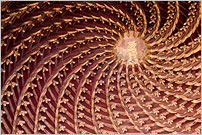
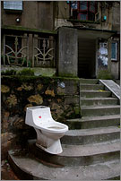

数码时代旅游摄影快速指南
by 长沙杨飞
|
本书的目标读者是零基础的摄影爱好者。我的写作目标是：任何识字的人读完本书之后都能成为半个摄影行家，从器材、技术到影像思想。 这本书来之不易，从2007年7月躲在广州的小楼里动笔，到2017年躲在长沙的老屋里再改，前后跨越十年。这八万多字绝大部分是我一个字一个字敲出来的，示范图片都是我自己所拍。请诸君踊跃扔砖 。 如果您没有时间阅读八万字，我特意总结了一个三千字提要，阅读只需十分钟。请点击本书提要。 |
总 目 录
（点击直达相关章节）
本书提要
第三章，买什么样的相机去旅游
第四章，到了旅游点怎么拍
第五章，回家后的简单图片处理
第六章，对旅行和摄影的再思考
目 录
（点击直达相关章节）
本书提要（三千字短文）
第六节：小数码DC购买的几个原则
第七节：数码单反机身的选择
第八节：数码单反镜头的选择
第九节：手机的选择
第十节：购买注意事项
结束语
第四章，到了旅游点怎么拍
第一节：拍什么（综述：旅游摄影万金油）
第二节：出门前的准备工作
第三节：怎么拍（综述：判断一张照片好坏的标准）
1，构图的三个基本原则
A，黄金分割
B，对称与对比
C，满框与留白
2，其他构图注意事项
A，寻找有趣的形状
B，前景与背景
C，包围构图
D，横拍与竖拍
构图法则综述（例外与创新）
第四节：分类技术指导：
1，风光 - 稳定压倒一切
2，建筑 - 寻找有趣的形状
3，人物 - 准大头帖
4，静物与特写 - 细节的力量
5，街头摄影
6，旅游合影
第五节：视频和短片的拍摄
第六节：实战案例
1，湖南省凤凰县
2，中国上海
3，柬埔寨
4，老杨的川藏线
第七节：怎样从根本上提高旅游摄影水平
1，全面提高自己各方面的知识和修养
2，坚持神经质和独立思考
第五章，回家后的简单图片处理
第一节：照片文件如何备份
1，数码照片的保存方法
2，传统胶片的保存方法
第二节：照片的电脑后期处理（数码暗房）
1，显示器的调整
A，颜色管理和色彩空间综述
B，显示器快速校准
2，RAW图片转JPEG的处理
A，RAW与JPEG综述
B，RAW转JPEG具体步骤
3，Photoshop（PS）图片简单处理
A，超快速的4步搞定PS（上图前）
a，旋转和裁剪
b，调整亮度，对比度，颜色（曲线与色阶）
c，图片改小并锐化d，加边框并署名
B，超快速的4步PS进阶
a，小局部调整：消除红眼 、粉刺、电线杆等不需要的东西
b，大局部调整：i，局部勾图处理；ii，叠加；
c，纠正镜头暗角和建筑变形（数码移轴）
d，自动批处理
第三节：照片的输出
1，传统胶片的冲扩
2，数码照片的扩印和打印
第四节：“自己赚旅游费”如何推销自己的照片
1，照片的分类归档
2，市场需要什么样的图片
3，常见的图片销售价格
4，如何推销自己的照片
本章附录：
1，小型影展
2，图片版权官司
第六章，对旅行和摄影的再思考
第一节，对摄影的一点思考
第二节，旅行的意义
第三节，对旅行摄影的再思考
我经常在各大书店徘徊。已经有很多摄影入门书籍了，为什么我还想增加一本呢？这是因为很多旅游摄影书：
1， 还是胶卷时代的老古董；
2， 术语多且文字生涩，不好理解；
3， 以摘编为主，漏洞繁多，误导性强；
4， 只教具体场景的拍摄技术，如日出晚霞，夜景焰火，至于为什么要这么拍则欠奉。没有从原理上阐述，以至于换个场景又犯愁了。
因为找不到一本理想的旅游摄影入门，我回到家开始自己动手。经过两年间歇性努力终于基本定稿。本书有如下特点：
1， 全面针对数码相机而作，兼顾旧胶片；
2， 所有示范图片都是本人所拍，95%的文字都是原创；
3， 家常白话风格，保证人人能看懂。除了光圈快门等几个名词外没有任何术语；
4， 在具体技术指导上强调为什么要这样拍，以达到举一反三的目的。
我从2000年开始用数码相机，从古老的三百万像素G1到顶级佳能1Ds系列以及nikon
D3，从135、120到大画幅，从数码到胶片，除了没用过数码背，各类相机我基本都把玩过，其间走了很多弯路，浪费了很多时间和钱。不让后来的同志吃亏也是我写作的动力之一。
我的专业是金融，摄影是纯自学的，本书也可算作与诸位朋友的摄影自学交流。也许你会发现我的一些观点和传统摄影书不太一样。个人看法不同，做法迥异，但条条大路通罗马。不敢保证我讲的都正确，但这些方法我自己都实践过（包括一些土办法），通过多年的努力我办过个展，开过培训讲座，出过书，算小有成就，希望这些实践经验对您有所帮助。
图：用三百万像素佳能G1拍摄的城市雕塑
摄影有几个无法绕开的专用名词，如光圈、快门、RAW和ISO等。本书首先用白话加举例解释了这几个必要的名词。
第二章是旅游数码相机购买指南。摄影器材够用就好，能手动曝光的小数码和入门级数码单反都足够职业旅游摄影用。廉价变焦镜头一样能拍出好照片。关心相片远比关心相机重要。
第三章是具体拍摄指导。本章首先探讨了照片好坏的标准：立意准确，表达简洁。然后介绍了黄金分割、对称和满框三种最常用的构图法。在风光摄影上本书特别强调稳定性（三脚架），参照物、低ISO、中等光圈。在静物摄影上强调简洁的背景。在建筑摄影上强调寻找有趣的形状。在街头人物拍摄上强调敏锐的观察力和快速反应。
摄影在技术上并不难，数码摄影就更简单快捷。相对于需要至少四五年才能基本掌握的钢琴技巧来说，摄影技术真的不算什么。我经常在讲座中开玩笑：如果你没有在一个月之内掌握基本摄影技巧，不是你太笨就是我太笨。
第四章是简单的图片后期处理。本章从电子文档和底片保存开始，先介绍了色彩管理和显示器调整，常用的Photoshop处理（颜色调整及变形修正等），还简要叙述了照片输出（冲印和自己打印）。最后一节介绍了旅游图片市场的现状、图片价格和推销方法。
只局限在技术环节是无法拍出好作品的，本书还简单回顾了摄影史，意在使读者对摄影有纵向的全面理解。本书最后一章是我个人对旅游和摄影的一些思考。俗话说三流摄影师比器材，二流摄影师比技术，一流摄影师比思想。独立思考永远最重要，与众不同的思考才能拍出与众不同的图片，旅游图片也是一样。
苏珊•桑塔格(Susan Sontag)在《论摄影》中曾说：照片从来不能解决什么问题，它总是在不断的提出问题：为什么会这样？如果你能不断的发现问题，你就会不断的按快门，把你的思考和疑问传达出来。如果观众看过你的照片后也良久驻足，思考着你的思考，疑问着你的疑问，那您就快接近摄影的最高境界了。
感谢所有对本书初稿和电子版提出过意见和建议的朋友们，谢谢诸位。
杨飞，
2009年6月4日初稿，2014年12月30日改于长沙
（器材史的简单回顾）
很多人现在把摄影称为一门艺术了，但从摄影术发明的初衷来看，拍照就是为了记录 –
不管能否永垂，是人都想不朽啊。和结绳记事不同，照相机记录的是光线 – 它所刻画的实际场景。
从几百万年前猿猴的一个分支开始直立行走一直到公元1826年，我们要记录一个实际的场景没有别的办法，只有拿笔画。画画有两个很大的缺点：
1， 不够真实。10个人来画像，有5位把我画成了猪头，另5人把我画成了帅哥。像是画好了，但我到底是猪头还是帅哥的问题依然没有解决；
2， 速度太慢，只有神仙才能在一秒钟之内完成一幅画作。
自然界有着它自己的画笔 – 光线。但由于知识和技术的局限，几百万年来人类无法捉住这枝自然的画笔。
今天市场所见的数码相机绝大部分是日本货，国学精英分子们可能会情不自禁引用中国公元前400多年春秋时期《墨经》提到的小孔成像，
貌似此洞可证明中华民族是照相机（原理）的发明者。说实话这不能完全算是意淫，因为不管是一百多年前的笨重箱机，前几十年的各种胶卷相机，或今天的数码相机，其成像原理和老祖宗所记述的小孔成像是完全相同的：拿一个密封箱子，在任何一面钻个小圆孔，然后把有孔的这面对着窗外，窗外的景象比如一棵树什么的，就会在圆孔对面的箱壁上生成此树的倒影。

小孔成像示意图
理论上来说，任何一个开了小孔的密封盒子都是一台原始的相机。但这个原始相机最多只能算是半个，
当太阳下山一切重归黑暗，我们依然一无所有。这是一台没胶卷的相机 - 无法记录。
1826年的一天，法国人尼埃普斯（ Joseph Nièpce,1765~1833）终于找到了一种胶卷 –
沥青。他把感光后能变硬的白沥青涂在锡合金板上，装进暗箱里对着窗外曝光了8小时，得到了人类历史上第一张照片，内容是天空下一个农村房子局部。由于感光时间太长且影像模糊，他的发明未能得以推广。

1826年，人类历史上第一张照片，一个农村房子局部
看来沥青不是好的感光材料，模模糊糊的拍一张还要8个小时。到1839年，法国人达盖尔发明了一种银版摄影术，用碘化银替代白沥青，用镀有碘化银的钢板在暗箱里进行曝光，以水银蒸汽进行显影，再以海波溶液定影，最后得到了十分清晰的金属照片。银版摄影曝光大约需要10到30分钟。

达盖尔银版摄影作品，《巴黎寺院街》1838
达盖尔的银版摄影是没有底片的，拍一次得一张，和现在旅游景点四处可见的宝丽来一次成像照片相似， 拍一次得一张，不可复制。不可复制那还传播个啥？所以和达盖尔几乎同时，英国人塔尔博特（William Henry Fox Talbot，British, 1800–1877)发明的“卡罗法” (Colotype)摄影术具有更大的意义，虽然卡罗法在初期清晰度比不上 达盖尔银版法，但它是有底片的，可以无限复制。所以在我看来，英国人塔尔博特才是摄影术的真正发明人。1844年，塔尔博特在伦敦出版了人类历史上第一本摄影画册《The Pencil of Nature》，大自然的笔，印数150册。至此我们终于能够基本捉住光线这枝自然的画笔了。

The Open Door, 打开的门，画册《The Pencil of Nature》大自然的笔，图片之一
特别值得一提的是卡罗法曝光时间只要3到5分钟，比需要至少10分钟的达盖尔银版法进步显著。我之所以强调曝光时间是因为感光度是底片最重要的指标之一，如果拍一张照片的曝光时间需要十分钟以上，这种摄影术就不很实用，只能用来拍摄自然风光，无法（或者很难）拍摄人像
– 死的东西还好说，一个活人很难在相机前保持一个姿势十分钟纹丝不动，更别谈街头抓拍以及运动摄影了。
接下来的几十年，摄影底片不断地在原材料和感光度两方面取得进展。1851年伦敦人阿切尔（Frederick Scott Archer，1813
-1857）发明了（碘化银混合的）火棉胶（Collodion）摄影法，又称湿板摄影法（Wet Plate
Process）。湿板法进一步降低了底片成本，而且曝光时间减少到了一分钟之内。
到了1871年，干版法替代了湿板，并将曝光时间进一步缩短为1/25秒（室外光线下）。
这是一个巨大的进步，1/25秒意味着可以手持相机了。在这之前，所有的拍摄都必须用三角架。至此我们终于能够（快速
有效地）捉住光线这枝自然的画笔了。
但胶片板子还是麻烦，能不能把它卷起来？1888年，伊斯曼正式开始出售赛璐璐片基的卷装柯达胶片。当时这种胶卷感光度为ISO12.
没多久，感光度ISO100以上的胶卷也研制出来
了。至此摄影底片的问题被彻底解决，接下来一百年胶卷就没再有什么大变化了。也许后来彩色胶卷算是一大发展，但鄙人认为色彩是摄影最后考虑的因素，我本人对黑白图片一直比较喜欢。
科技的发展不但解决了胶卷材料和感光度的问题，也解决了照相机本身的问题。早期旅游摄影在采用湿版法的时候，一个摄影师得雇好几个人扛箱子和底片，那叫一个重！美国南北战争的
战地摄影记者都驾着大型马车扛器材，叫车子叫 photographic
van。因为底片都是一块块涂了感光材料的大型板子，尺寸为8X10寸或更大。那时候的相机都跟小箱子一样大 – 你总不可能造一台比底片还小的相机吧？
不管是旅游摄影还是报导摄影都迫切需要更便携的照相机，1888年卷装柯达胶卷上市后，照相机和底片尺寸都越做越小。1890年左右的时候出现了6X6厘米尺寸的胶卷，也就是今天我们常用的120胶卷。据说是爱迪生把当时伊斯曼柯达公司最新的70毫米胶卷从中间裁开，并在两边打上易于卷片的小孔，就成了我们今天常用的35毫米胶片，它的实际尺寸是每张24X36毫米。
1914年，在德国莱兹显微镜厂工作的工程师巴纳克（Oskar Barnack）制造了世界第一台使用35毫米胶卷的135相机，这就是大名鼎鼎的莱卡原型机Ur–Leica。从此那些笨重的木头箱子开始被抛弃，精密机械和光学的产物135相机开始一统天下。刚开始是以莱卡为代表的旁轴取景135相机，到1948年，东德蔡司（Zeiss）公司生产出一种取景和拍摄可以共用一个镜头的135相机，这就是我们现在常用的单镜头反光照相机，简称单反相机（Single
Lens Reflex，SLR）。

莱卡原型机Ur – Leica。1914年
120和135相机开始了大规模工业化生产，胶卷和相机卖成了白菜价，人人都能用得起。胶卷的感光速度也飞快了，ISO800甚至1600的胶片都出来了，相机本身也小得能随手塞进口袋里，走到哪拍到哪，怎一个爽字了得！
正当全世界都觉得135相机和柯达胶卷已经完美无缺并将永垂史册的时候，1969年，有一样发明真的没过多久就让传统135胶卷永垂不朽了。这一年，美国贝尔实验室的两位科学家波义尔博士和史密斯博士发现有一种半导体对光线非常敏感，一照它就会产生电子信号。这种光敏半导体被取名叫做CCD，Charge
Coupled
Device，中文叫做电荷耦合器。听起来怪绕口的，CCD这东西其实就是一种电子感光器，我们叫它电子胶卷吧。光敏半导体（电子感光器）有多种，CCD是其中一种，其他常见的还有CMOS，Foveon的X3等等。本书后文以CCD泛指所有数码相机的心脏
- 电子感光芯片。
今天我写下“不要胶卷也能拍照”这几个字并不难，但若在1969年之前四处涂鸦这句话，估计我很快就会被送进疯人院。电子感光器CCD的发明意味着不要胶卷也能拍照，从此开始了纪录光线的数码时代，传统胶卷被革了命，到现在几乎每个人手里都有一两个CCD，不信请把你的手机拆开看。
1975年，柯达公司的赛尚先生 (Steven Sasson)研制出了第一台数码相机。这台相机的CCD只有一万像素（想想今天千万像素满天飞），电源是16节五号电池，存储卡是普通录音磁带，相机重约四公斤。1975那时要生产一台千万像素的数码相机当然也是可能的，但我估计那个CCD可能和你家客厅面积相当。

赛尚先生和他的第一台数码相机
感谢主，1975年以来电脑和数码相机都受益于一日千里的半导体加工以及大规模集成电路技术。到1986年，柯达开发出100万像素的CCD，露出了数码接管胶片的第一线曙光。
接下来的故事大家都知道了。这个匪夷所思的CCD从此就慢慢革了胶片的命。1998年是家用数码照相机的百万像素元年，从此以后每年数码相机的CCD都增加上百万像素，每年价格下降10%（同类型机）。
到2008年，已经很少有人用胶卷拍照了，人手一台小数码，至少都是
八百万像素的，价钱也差不多是白菜价（很多千万像素的小数码价格在人民币1000元以下）。中高档的小数码已经是1200万像素
以上的了，价格有的不到人民币两千。数码单反DSLR也卖成了地摊价，千万像素
以上的套机（机身加标准变焦镜头）只要不到人民币四千元。顶级数码后背达到了6500万像素（Phase1
P65+）。我没玩过这家伙但据说6500万像素的数码相机比4X5寸底片滚筒电分扫瞄的效果还好，不过它的价钱也比一辆TOYOTA Corolla还贵。不管怎么说，
到了2014年，胶卷基本可以进博物馆了。
1998到2014的这十多年陆续面市的数码相机有几十个品牌几千种型号。鄙人认为以下五个型号是划时代的产品：
Nikon Coolpix 950, 两百万像素家用DC，发售价890美元,
1999年2月。此机意味着普通家庭能买得起优质旅游数码相机了。两百万像素是一个重要标杆，因为200万像素可以精细打印5X7寸的照片，大部分家庭照就是这个尺寸。

Nikon Coolpix 950, 两百万像素家用DC, 1999年2月
尼康Nikon D1, 260万像素专业数码单反，发售价5000美元, 1999年6月。此机一出，数码单反开始迅速占领媒体和出版行业。D1也意味着柯达DCS系列专业数码单反的抢钱时代结束，在D1之前，柯达的DCS系列从来没有低于每台一万美元。尼康D1之后，柯达在数码相机市场上再也没翻过身来，一直到破产。这就叫乱拳打死老师傅。
佳能Canon D30, 三百万像素数码单反，发售价2800美元,
2000年5月。D30意味着摄影爱好者也能买得起数码单反了。在此之前买一台数码单反要下的决心和买辆车类似。
佳能Canon 300D, 六百万像素数码单反，发售价900美元,
2003年8月。一千美元是电子产品能否普及的分水岭。发售价900美元的300D意味着数码单反从此走入千家万户，传统胶卷单反基本可以进博物馆了。
松下G1，发布时间2008年9月，1200万像素。这是世界第一台没有反光板的可换镜头数码相机，叫做单电（单镜头电子取景器数码相机），或者叫微单。取消反光板是一个革命性的的设计，减小了相机的成本和体积。
数码相机CCD的像素会无限增长下去吗？比如再过几年弄个一两亿像素什么的？鄙人私下认为不会。因为现在主流数码相机已经完全达到了传统135胶卷的解像度，继续增加像素已经没有必要了。
这些年来很多人为135胶卷到底相当于多少像素争来吵去，最后也没个定论，问题没解决还伤了感情。摄影是为了得到照片，出片才是硬道理。根据我的经验，不论使用多好的相机和镜头，135胶片精细出图到20寸已经是极限，800万像素数码相机精细出图的极限也是20寸左右。鄙人认为135胶片大致相当于800万像素。
解释一下精细出图。所谓精细就是照片印好后要经得起拿在手上（近距离）仔细端详。一张底片到底能放多大的照片？这要看你站多远看了。如果你需要，我可以用135底片放一
整面墙那么大的图片给你。电影院正是这么干的。这种巨型图片只可远观不可近玩，因为颗粒太粗了。这是废话了，谁也不会凑到银幕跟前看电影。
既然一千万像素完全可以胜任20寸精细出图，CCD继续增加像素就失去了意义
（对大多数家庭消费者来说）。除了婚纱，有谁把家里的图片放大到20寸以上了？婚纱也不需要自己拍啊，就算你想自己拍婚纱，一辈子也就一两次的事，完全可以去租高档相机，没有必要破费。
2014年市场上小数码有很多 已经是1600万像素甚至更多的。这个市场正在被误导，很多人认为像素越多照片越好，这完全是误会。在CCD面积一定的情况下，里面增加更多的像素反而会造成图像质量的下降（此问题我后文会专门解释）。
广大的数码相机营销人员迎合了大众的误解，不断敦促研发部门制造更高像素的CCD，这实在是以讹化讹之悲哀。我认为现在数码相机不应该在1000万像素以上再简单增加几百万像素，而应该在提高CCD质量上下功夫。降低高感光度（高ISO）噪音水平以及增大曝光宽容度才是当务之急。
1975年，柯达应用电子研究中心的塞尚（Steven J.Sasson）在世界第一台数码相机的原型机技术报告里展望了数码相机的未来（原文摘抄）：
“未来的相机可以想象成是一种能在光照条件极差的情况下拍摄出彩色照片的小型设备。那时的照片将存储在一种磁介质内，一种非易失性、稳定性极佳的存储器，可从相机内取下以进行播放。这种照片的分辨率将至少相当于现在的110胶卷。声音也可同影像一并录下，以增加照片的诠释性。电子形式的照片经稍作修改或不作修改便可通过现有的通信信道发送出去。照片将保存在胶卷、磁带或视频光盘上，并且相机存储介质将可重复使用。”
不得不佩服塞尚先生，他1975年的预测是基本准确的。牛人啊。我琢磨着塞尚有没有炒点股票，电子类的，不然太可惜了。
在可预见的未来，一台理想的数码相机应该有以下特点（纯属我个人预测）：
1， 三千万像素（我是职业摄影师，展出或需要42寸图片，一般家庭用1000万像素足够）
2， 感光度ISO3200时图片质量和2014年ISO100的一样好。
3， 镜头焦距相当于17-400mm，恒定光圈F1.8，图像无畸变和紫边，中心和边缘解像度一致 ，此变焦镜各焦段解像度都达到50mm定焦镜头水平。
4， 电池一次充满可拍一万张。
5， 存储卡容量100G（购机赠送）
6， 体积不超过一包香烟大小
7， 每台售价人民币三千元以下（2014年人民币，扣除通货膨胀因素）
以上各项中第三和第四是比较难实现的，除非现有的光学科技也发生革命性变化，否则一个完美的17-400mm变焦镜头极难实现。第四项，什么电池这么强啊？搞一个氢核聚变的超微型核动力电池？这已经是另外一个学科的领域了，这个学科的突破不但将解决数码相机的电池问题，还将解决地球人的能源问题。
未来的未来，我们将不再需要照相机。
上面我们说的都是使用各种胶卷底片的相机，不论是传统的胶卷还是现在的电子胶卷CCD。其实最伟大的数码相机是免费赠送的，且已经人手两台，这就是我们的眼睛 –
生物照相机。
在计算机界有个
“摩尔定律”。英特尔公司创始人之一戈登•摩尔（Gordon Moore）于1965年在总结存储器芯片的增长规律时，发现“微芯片上集成的晶体管数目每12个月翻一番”。1975年，摩尔修正了定律，改为每隔24个月CPU芯片上集成的晶体管数量将翻番。从1971年第一片微处理器Intel4004至今，微处理器发展情况大致符合摩尔定律。
问题是，如果芯片上的晶体管按照摩尔定律持续不断地变小，它们将于2023年变到一个原子那么大。任何传统工艺或纳米管都对这种情况没有办法。届时传统的个人电脑可能会被生物
、量子或光学个人电脑等取代。生物计算机是一场新的革命，由有机分子（DNA）组成的生物化学元件，一平方毫米的面积上可容纳几亿个。也许以后我们不应该叫计算机硬件了，应该叫“湿件”，分子级别的。
听起来如同天方夜谭， 但大规模集成电路技术迟早会发展到尽头这是无疑的，生物电子科技将会取代传统硅电子科技。数码相机的CCD和计算机的CPU同为大规模集成电路科技的产物，它们的命运也将相同。
我们眼睛的视网膜是能感光的一种神经组织，可称之为生物感光芯片。此芯片在感光度、像素以及动态范围等方面比任何CCD都强大。视网膜感光细胞( receptor
cell, RC）将光转换成电信号，再将信号传到双极细胞，双极细胞将信号处理后传递到神经节细胞。我们就是这样看见东西的。眼睛就是一台超级照相机，严格的说应该是
照相机加摄像机，因为我们看到的世界不是纯静态的。
本章开篇讲过，理论上来说任何一个开了小孔的密封盒子都是一台原始的相机。但这个原始相机最多只能算是半个，因为我们只是通过小孔触摸了那自然的画笔，当太阳下山一切重归黑暗，我们依然一无所有。这是一台没胶卷的相机。近两个世纪来，人类一直在寻找这记录的媒介，从最开始的白沥青，银版，传统胶卷，一直到电子胶卷CCD.
我们的眼睛也只能算是半个照相机，它也只能看见，不能再现（打印或精确复制某一场景），因为基于生化反应的神经细胞无法与基于物理反应的硅集成电路存储卡沟通，我们看到了东西却无法
精确存储下来，无法再现和复制。随着生物计算机科技的发展，我们有理由相信一种全新的生物存储技术的诞生。到那时候我们的双眼就是一台超机无敌生物相机了，还要买相机干啥？
分子级生物计算机是一种匪夷所思的创新，这东西什么
时候能变成现实谁也不知道。生物照相机、计算机在发展过程中还有无数多的难关要克服，比如人机界面，怎样实现DNA计算和存储的输入输出，这些大问题
不解决就无法应用。生物照相机和计算机是否也意味着计算机模拟神经系统？超级智能机器人？不敢往下想了。但集成电路科技迟早会发展到尽头这是无疑的，人类总不可能从此不再发展吧？
我们的祖先没有相机，然后发明相机，完善相机，一直到N年（世纪）后生物相机又取代所有的相机，绕了一大圈我们又回到了无相机时代。
本来无一物，何处惹尘埃？
摄影这个东西到底是什么，100个人有108个答案。我认为文字，摄影和电影的本质功能都是一样的，那就是记录。文字记事，摄影记景，电影记录动态的景。摄影图片和文字以及电影一样，除了基本的记录功能，还有艺术创造的功能。文字可以用来写诗歌和小说；摄影图片也可用来表达个人情绪和艺术创造力。电影就更不用说了，已经基本都在拍虚构的东西了。
摄影术从1826年发明到2014年的180多年发生了翻天覆地的变化，但变来变去都是为了怎么更方便纪录。为了方便拍照我们把湿板变成了干板，又把干板变成了胶卷，最近这些年又用电子胶卷CCD替代了传统胶卷，数码相机得以大行其道。随着科技的发展，也许将来还会有生物感光器来替代现有的数码相机CCD，但不管记录的媒介怎么变，摄影的本质是不会改变的。
相比传统胶卷相机，数码相机最大的好处就是图片立即得到（看到）。人类已经变得越来越没有耐心，以前不说恋爱一年半载吧，至少还得找个媒婆月老什么的，现在干什么事都要求立即得到，一夜解决问题。数码相机拍照就是立刻得到，就拍就看。从图片的后期制作来看，数码摄影意味着不再需要传统的化学暗房，图片稍加调整
，连上打印机就出照片。
180年来技术的发展使摄影的整个过程变得越来越简单，大大降低了这门艺术（手艺）的门槛
。摄影以老百姓喜闻乐见的形式进一步走进了千家万户，这也是现在数码相机（除了环保之外）最值得肯定和表扬的地方。
虽然摄影过程容易了，但要得到好的照片依然不是那么容易。技术上来说，依然需要好的构思，勤奋的练习。俗话说三流的摄影师比相机，二流的摄影师比技术，一流的摄影师比思想，要提高一个人的思想修养更无捷径可走，读万卷书，行万里路，阅万个人，继续埋头苦干吧，几千年来先贤们都是这么干的。
杨飞，2007年7月初稿，2014年12月修改
种田要知节气，开车要懂离合，任何一样手艺都有行话。这本小册子尽量不用行话术语，但有几个词是例外，它们是必须掌握的摄影名词：光圈，快门， 曝光，焦距， ISO，景深与RAW。
ISO是一个曝光率极高的词，刚才我在超市买饼干的时候就看见包装袋上写：本公司已通过ISO9001质量体系认证。这个ISO是国际标准组织的缩写，International Standards Organization。国际标准组织制定饼干管理标准，也制订胶卷的生产标准，所以货架上的胶卷有ISO100，200和400的几种，这就是感光速度不同的胶卷。
ISO感光度是CCD（或胶卷）对光线的敏感程度。如果用ISO100的胶卷，相机2秒可以正确曝光的话，同样光线条件下用ISO200的胶卷只需要1秒即可，用ISO400则只要0.5秒。 在数码时代，数码相机的主菜单里都有ISO选择，100，200，400或者800，这和胶卷上的一样。看机型不同，低的到ISO50，最高有到25600的，数字越大越敏感（感光度越高）。

图2-1 数码相机CCD/CMOS感光芯片大小（与35mm胶片对比）
（以下褐色文字略带技术术语，跳过不读并不影响全文完整性)
为什么同是1000万像素数码相机，DC与DSLR在ISO400以上的图片质量差别如此之大？这主要是因为DC与DSLR的感光芯片大小（面积）不同。CCD感光芯片实际上是一个光电转换器，它能把日光的照射转变为脉冲电子信号，把这些电子信号纪录下来就能生成照片。1000万像素的CCD上面有1000万个有效像素点，要得到正确曝光的照片，每个像素点必须要给予一定的光照强度。光圈一定的情况下如果光照时间同为一秒钟
（或者说曝光时间一秒/快门速度1S），面积大的CCD当然接受的阳光多，分配到每个像素点的光照充分，CCD就能正常工作，照片能够正确曝光（图片细节丰富，噪点少，颜色准确）。
小数码DC的CCD面积小，在光线昏暗时如果只给一秒曝光时间，接收光照总量就少，如果这个小数码DC也是1000万个像素点，分配给每个像素点的光照强度就不够了，微弱的光线只能产生微弱的电子信号，所以我们无法得到正确曝光的图片。这时候DC的电子放大电路就开始工作，把微弱的电子信号放大
来得到正确曝光的照片。提高ISO数值实际上是个电子放大处理过程。
这个过程和扩音话筒是同样道理，说话声音小不要紧，音量开大点就行。但扩音机的效用是有极限的，如果把音量开到最大，嘈杂的环境音以及咔咔的电流声也被一同放大，最后导致啥也听不清楚。音响效果要好，首先说话者本人必须声音洪亮才行。同样的，要图片的质量高，CCD也必须面积大，进光量大，数码相机的电子放大效用也是有极限的，因为漫射光产生的干扰和电路杂波也会被一同放大，虽然能正确曝光，但图片的质量很差（噪点多，细节丢失，颜色失真）。
如果以上叙述不好理解，我们来做个简单的算术题。在一个明媚的早上，阳光打在我们脸上，温暖留在我们心里。此时我们假设光线全部是由粒子（光子）构成。典型DSLR的CCD面积为24mmx15mm=360平方毫米，而一般DC的CCD为6mmx9mm=54平方毫米。假设此时的光照强度为每平方毫米每秒100万个光子，小数码DC的54平方毫米CCD一秒钟总计能接收54X100万=5400万个光子，这个CCD是1000万像素的，所以每个像素每秒钟分配到5400/1000=5.4个光子。
同理，DSLR的CCD面积为360平方毫米，一秒钟接收光照总量就是360X100万=36,000万个光子，同样是1000万像素，每个像素上每秒能分配到36个光子。假若每个像素点必需每秒接收36个光子才能正确曝光，DSLR此时不需要启动电子放大电路，而小数码DC必需启动电子放大将弱电子信号放大6.6倍才能让图片正确曝光（5.4X6.6=36），图片质量当然差了。
简单总结：在像素相等的情况下，CCD面积越大，高ISO的成像质量越好。也就是说：在CCD面积一定的情况下，里面增加更多的像素反而会造成图像质量的下降。所以现在的数码相机不应该在1000万像素以上再简单增加几百万像素，而应该在提高CCD质量上下功夫。降低高感光度（高ISO）噪音水平以及增大曝光宽容度才是当务之急。
800万像素已经足够旅游摄影之需，我们在选择数码相机时就不该只看像素高低，而应该注意相机CCD的大小。现在是2008年，解像度已经足够，该是重点关心图像质量的时候了。
在摄影术最初发明的那些年，拍张照片曝光时间一般都需要好几分钟，大部分照相机是不需要快门的，开始曝光的时候把镜头盖取下，然后看表，五分钟后盖上，照片完成。
后来，胶片的感光速度越来越快（ISO越来越高），曝光时间变为一分钟，几秒钟，1/10秒甚至几百分之一秒，这时候用手取镜头盖就不够快了。我们需要一个能准确控制曝光时间的东西，这个东西就是快门。
快门有机械快门，电子快门，以及电子机械联合快门等很多种类。
上一章说过，所有相机都基于小孔成像原理：拿一个密封箱子，在任何一面钻个小圆孔，然后把有孔的这面对着窗外，窗外的景象比如一棵树什么的，就会在圆孔对面的箱内壁生成此树的倒影。假如我们在内壁涂上感光材料（装上胶卷或CCD），这个有孔的箱子就是一台完整的照相机了。这就是针孔相机。
既然一台照相机可以不需要镜头，为什么现在的相机前面不是一个小圆孔而是几块玻璃呢？而且这几块玻璃（镜头）还卖得那么贵！这是因为小孔要成像的话，孔必须很小，这也是针孔相机名称的来历。如果孔开得和门一样大，这个孔就成不了像。所以我们没有小门成像一说。孔小进光量就小，所以玩针孔摄影非常锻炼人的耐心，一张照片曝光几分钟到几个小时都常见。而且，由于光的衍射干扰，针孔相机拍的图片都不够清晰，如雾里看花一般。
没有人原意花几个小时去拍一张模模糊糊的照片，我们要想办法加大进光量。有什么办法能够把这个小孔开大而又能生成清晰的图像呢？人们马上就想到了凸镜的聚光功能。把玻璃凸镜装到大孔上，问题不就解决了？
确实如此。相机镜头就是这样诞生的。今天数码相机的各种镜头都是几块凹凸镜的排列组合，然后外面用塑料或铁皮一包。有了镜头，小孔成像的这个孔 –
也就是下文中的光圈 – 就不再是针孔了，它变成了洞。
洞变大了，进光量问题解决。但有时候问题又来了：我们并不是任何时候都需要大洞。比如夏日沙滩上烈日当头，四处白花花一片，为了分清到底是人肉还是白沙，我们需要眯着眼睛仔细观察。镜头是照相机的眼睛，这时候相机也需要眯起眼睛。很显然，为了应付不同的光线强度，我们还需要给镜头装上能够调节这个洞的大小的装置，以便在强光时缩小为针孔，弱光时开成大洞。这个装置就是光圈。光圈英文名称为Aperture。一组凹凸镜再加上光圈就诞生了完整的镜头。

图2-2：光圈值与光圈大小示意图
既然光圈可大可小，那多大的时候镜头的成像质量最好？根据上图，最小光圈F22时光圈跟针孔差不多，数码相机成了针孔相机，前面说过针孔成像好不了；光圈最大的时候小孔又变成了大门，成像也差。所以，根据中华民族传统的中庸之道，请牢记：
重要结论：镜头在中等光圈的时候成像最好（图片最清晰）。
如果是135数码单反，中等光圈为F8或F11。小数码DC要看具体机型，如果可选光圈值在F2.5到F8之间，中间的F4.6为最佳光圈。
假如光阴似水，镜头的光圈就是水龙头，它控制着水流（进光量）的大小。
对于镜头我们当然是希望它的光圈越大越好，这就如同家里的水龙头，虽然平时我们刷牙洗脸从不把它开最大，但万一有一天家中失火，我们会立即把龙头拧到最大，并且痛恨当初为什么没有装一个大点的水龙头。一个镜头最大光圈时成像并不好，平时我们一般少用最大光圈；但在特殊弱光又不准使用三脚架的情况下，比如深夜的街头纪实抓拍，我们一定会毫不犹豫地使用最大光圈，并且后悔当初为什么没买一支大光圈镜头。
但大光圈镜头的价钱很贵，重量惊人。比如Canon70-200mm有两个版本，光圈为F4的售价人民币六千元，重700克；光圈为F2.8的那一款售价近一万元，重达1500克。这是因为光圈大一级，镜片就大很多，加工难度大。是否值得为大一级光圈多付出一倍的钱和负重的汗水，这是一个见仁见智的问题。
为了讲清曝光这个词，我们还是回到小孔成像。假设一个黑乎乎的密闭房间，一面墙壁上开了个小圆窗户，窗对面的内壁上安上感光材料（白沥青，大型胶卷或CCD）。这就是一台大型房式照相机。在没有打开小窗之前，房间里是黑乎乎的。
上帝说：要有光。于是我们打开小窗，光线从小孔而入，射到对面墙壁的胶卷上，产生光化反应（或光电反应，如果是CCD），照片就诞生了。此过程就叫做曝光。要得正确曝光的图片，必须精确决定曝光量。所谓曝光量就是让多少光进入这个密闭房间里。如果进光量太大，照片就会白花花一片，晚上变成了白天。如果进光量太小，照片就会黑乎乎的，白人变成黑人。
幸好我们有了光圈和快门两样工具可以一起来控制曝光量。曝光量是光圈和快门联合决定的。可以这样认为：光圈（值）大小其实就是那个小圆窗户开多大，快门（速度）就是窗户打开多久。假设窗户只打开1/4，时间为4秒钟可以正确曝光的话，很显然，窗户打开一半，时间2秒钟也能让底片正确曝光，因为1/4*4=1/2*2=1，进光量都是一样多。同样的，如果窗户全开，曝光时间就只需要1秒了。
假若一个镜头光圈全开为F4，用摄影行话来说，光圈F4快门速度1秒为正确曝光值，那F5.6和2秒以及F8和4秒也同样能得到准确曝光的图片。
重要结论：一张正确曝光的图片可以有N种不同的光圈和快门速度组合。
总结以上几个名词解释，有三个因素能影响一张图片是否正确曝光：光圈，快门速度，ISO。其中光圈和速度联合决定进光量，ISO决定CCD的感光速度。如果进光量不够，我们可以开大光圈或者降低快门速度，还是不够的话就提高ISO。大光圈的缺点是解像度不如中等光圈，快门速度降低则图片可能会糊，提高ISO后图片质量也会下降
。没有完美的方案，如何取舍要灵活决定。
曝光和测光是一对双胞胎，如果不能准确测定光照强度，正确曝光就无从谈起。1965年以前绝大多数相机都没有机内测光装置，拍照时要另外携带笨重的测光表，或者靠经验来估计光照强度。现在所有的数码相机都内置测光表，它能测量光线的强度，自动给出能正确曝光的光圈和快门速度，大大降低了摄影的技术门槛。
相机是如何实现自动测光的？原来每个数码相机里都有一个光敏电阻（不同强度的光线照射时电阻值发生变化），相机内的电脑根据电阻值的变化确定光线强度，进而确定曝光值（光圈，快门）。
测光模式主要有点测光，中央重点测光，区域（平均）测光三种。点测光只测取景框内一个小点的光线强度（此小点大约为取景框面积的10%到1%，看不同机型）。区域（平均）测光则把取景框分为5到63块（看机型不同），分别对每块测光然后再加权平均得到光照强度。中央重点测光是简化的区域（平均）测光，只把取景框分为中央圆圈和四周两块，分别测光，然后加权平均（中央圆圈的权重为70%左右）。
根据什么情况来采用不同的测光方式？大多数情况下用区域测光即可。在光线明暗反差很大时应该采用点测光。用区域（平均）测光或中央重点也可以，你可根据自己的艺术创意进行曝光补偿。
到底怎样才算是正确曝光？这个问题没有绝对准确的答案。总原则：照片要能真实反映拍摄时的环境亮度。如果一张正午户外的照片被拍得昏暗如夜，这张照片就曝光不足，反之则是曝光过度。曝光是否准确是根据日常生活经验判断的。
相机自动确定的曝光值90%以上是正确的，但也有不准的时候，典型的例子是雪景，本来应该雪白刺眼的场景拍出来却是一片灰色；再比如对着一堆煤球拍，本来是纯黑，拍出来却是灰煤。这种失误根源在于相机的反射式测光原理。

图2-3：18度中间灰（柯达灰卡）
我们之所以能看见东西，不外乎两种情况：一是物体本身可以发光，比如太阳或灯泡；大多数情况是物体能反射外来光线。反射的光线越多，物体就越亮，反之则越暗。假设两个极端，纯黑色物体不会反射光线，反射率为零，而纯白的物体反射率是100%。在这两个极端之间取中间值就是不黑也不白的灰色，称为柯达灰，也称为18%中间灰。
以一张客厅照片为例，客厅墙壁又白又亮，而电视机的大屏幕又黑又暗，窗帘和家具等亮度居中。要以谁的亮度来确定曝光？相机自动测光就是取平均数，最后给出一个让图片达到中间灰的曝光值。
相机内部的自动测光电脑是个死脑筋，它认为全世界所有场景的平均亮度都是18%中间灰。好在大部分生活场景都是明暗交织的，平均起来差不多是灰色，所以大多数情况下自动曝光自动测光都相对准确。但在雪景这样的纯白场景（或者煤球等纯黑场景）时，相机依然会给出中间灰效果的曝光值，拍出来就会白雪成灰雪，煤球成灰球。此时我们就要对自动曝光值予以修正，对雪景增加曝光，煤球减少曝光，这样才能拍出亮度和色调正确的照片。修正（增减）曝光值就叫做曝光补偿。
曝光补偿的原则：白加黑减。如果构图中有大片白色物体或者有灯等特别明亮的物体，就要相应增加曝光量（增大光圈or/and减低快门速度）；如果取景框中有大片黑色的物体，则要减少曝光量。
一般来说，在光照比较平均的情况下相机的自动测光和曝光比较准确，但在明暗反差很大时自动曝光往往不准，需要手动暴光补偿。
之所以需要曝光补偿，是因为相机的小电脑虽然聪明，但还没有聪明到能判断物体到底是什么，如果有一天电脑能辨别出白雪，茶杯，或者煤球，那也就不用人脑来补偿了。不过就算
相机能认识物体，在进行艺术创作时还是需要曝光补偿，例如我今天心情不好，想故意把明亮的世界拍得灰暗些；又比如我想故意增加曝光量，把一个深色皮肤的妹妹拍得白白的。这些事情相机的电脑永远学不会，因为它不懂我的心，所以我们永远需要补偿。
在胶片时代，精确测光和曝光是极其重要的，
负片底片一旦曝光不足，色彩就非常难看；而反转片一旦过曝一档（1EV），其色彩和层次就消失大半，更何况只有在底片冲印后才知道曝光是否准确。在数码时代曝光的问题变得简单了，拍完之后可以立即回放，曝光不准可以马上改，而且如果图片以RAW格式存储的话，其抗过曝/欠曝能力是很强的，只要没有曝成完全没层次的一片纯白，过曝/欠曝一个EV之内的照片都能在后期电脑处理时调正，而且基本不漏痕迹。但过曝/欠曝太多还是不行，如果相差2EV以上，调正后的图片也会很难看。所以掌握曝光补偿白加黑减的原则依然重要。

图2-4/5：曝光补偿的操作（以Canon 400D为例）：按下Av+/-按钮（上图），然后转动快门旁边的主转盘即可。下图是400D的显示屏，第二排Av不是光圈优先，这里AV代表曝光补偿，400D可以正负各补偿两档（共四档，从+2到-2），以三分之一档为调整单位。

（focal length & its multiplier)
光线经过透镜就会聚成一点（焦点），镜头的焦距就是从镜片（或镜片组）的中心到底片(CCD)的距离，单位是毫米（mm）。对全幅135数码单反相机以及我们以前常用的135胶卷相机（使用超市里的盒装胶卷）来说，焦距50mm的镜头称为“标准镜头”，简称标头，拍出来的照片类似肉眼平视的感觉（视角为45°左右）。
严格的定义是：标准镜头就是焦距等于底片（或CCD）对角线长度的镜头。单张135底片是24x36mm，根据勾股定理计算，其对角线长度为43mm，所以135画幅的标头应该是43mm。在实际应用中我们把焦距为40-60mm的都称为标头。早期的单反相机是与50mm镜头捆绑销售的，这也许是称其为“标准镜头”的原因吧。
广角镜头（焦距小于35mm）能够让照相机“看得更宽阔”，因为它视角大；长焦镜头（焦距大于70mm）能让照相机“看得更远”，但视角窄。长焦镜头也称远摄镜头或望远镜头。从焦距的定义就可以推断出，广角镜头都身材矮小，长焦镜头都高大威猛。以后我们只要一看到那些又粗又长的大家伙，不用说那都是长焦头。
焦距固定的镜头即定焦镜头。1960年以前，变焦基本靠走。1965年之后，焦距可以调节的变焦镜头开始大量上市。变焦镜头的优势是明显的，改变焦距不用再走路，只需转动镜头筒。但变焦需要一套复杂的光学系统（其内部结构大多超过十片镜片），这给变焦镜头带来了
两个问题: 1，体积和重量大; 2，成像往往都不如最好的定焦镜头成像清晰。
我们经常看到数码相机广告上写XX倍光学变焦。这里的变焦倍数＝最大焦距值/最小焦距值。一个28-280mm变焦镜头的光学变焦倍数就是280mm/28mm，即10倍。光学变焦英文名称为Optical
Zoom，它依靠镜片的位移来实现焦距的改变。光学变焦倍数越大，里面的镜片就越多，镜头体积相应较大，画质相对较低，光圈相对较小。
光学变焦并不是越大越好。一般来说，只要愿意花大价钱认真设计精心制作，以目前的技术水平，光学变焦比在4倍以内的镜头其光学素质才有可能接近或者达到定焦头的平均水准，比如佳能Canon
70-200mmF2.8IS镜头（市价两千美元，重1.5公斤）。超过4倍变焦的镜头其光学素质基本不可能达到定焦头的水平。
1995年以来市场上陆续出现了10倍以上的大变焦镜头，光学变焦越大当然越方便，但成像也会相应下降。2007年底上市的Panasonic松下FZ18数码相机其光学变焦为28-504mm，达到了不可思议的18倍，但实测这款相机的镜头边缘解像度相当差，看来18倍已经接近光学变焦目前的技术极限了。
关于数码变焦我只有三个字：骗人的。数码变焦只是电子放大，软件稍作改动就可以从一倍到一万倍变焦任君自取。只有光学变焦才是真正的变焦，数码变焦是厂家用来欺骗外行消费者的。
以下是135镜头对应焦距说明。
表2-1：焦距与135相机镜头的分类
| 焦距 | 镜头类型 | 视角 | 备注 |
| 小于20mm | 超广角 | 大于95度 | 适合拍摄建筑与风光 |
| 20-35mm | 广角 | 95-63度 | 适合拍摄建筑与风光以及街头抓拍 |
| 50mm | 标准镜头 | 45度左右 | 具有F2以上的大光圈，便宜量又足 |
| 70-300mm | 长焦 | 34-8度左右 | 适合拍摄远距离物体。其中85-135mm焦距段适合拍摄人像 |
| 大于300mm | 超长焦 | 小于8度 | 适合拍摄超远距离物体比如野生动物 |
值得注意的是：一个镜头是不是标准镜头（标头）不是看它的焦距而是看它的视角，视角45度的就是标准镜头。对120相机来说80mm焦距镜头才是标头。在数码时代，对Nikon D40x等小CCD的数码单反来说，33mm焦距的镜头就是标头。
在数码时代的2008年，只有极少数售价昂贵的顶级数码单反CCD才与原35mm胶片一样大（36x24毫米），绝大部分数码相机CCD面积都比原胶片小，由此产生了镜头焦距转换系数的概念。Nikon非全幅DSLR的焦距转换系数均为1.5，也就是说原来135相机的镜头安装到D40，D80，D300等数码单反上，其焦距要乘以1.5，50mm的标头变成了75mm，200mm的变成300mm，以此类推。
之所以有焦距转换系数这个东西，是因为我们几十年来习惯了135相机和35mm胶卷的世界。如果以前几十年胶卷一直就是nikon D40x的CCD那么小，现在我们完全可以不需要所谓的转换系数而直接把33mm焦距镜头叫做标准镜头，因为它的视角是45度。在胶片时代我们的世界是很简单的，除了少数专业人士用120和大画幅相机，绝大多数人都使用135相机。表2-1关于镜头焦距的分类就是针对135相机和35毫米胶卷来说的。几十年来我们往往把50mm焦距，标准镜头以及45度视角这三者等同起来。
进入数码时代以来，这个观点是不对的，或者说不完全对，因为只有在CCD面积与35毫米胶片一样大的时候，焦距50mm的镜头才依然是视角为45度的标准镜头。如果焦距不变，CCD面积变小，镜头的视角也会变小，因为镜头的视角是由镜头焦距和胶卷（或CCD）尺寸两者联合决定的。参见下图：

图2-3：焦距，CCD尺寸，视角三者的关系
图中focal length就是焦距，angle of
view就是视角。根据上图可以推论：假如焦距不变，CCD越小，镜头视角越小。Nikon D40x数码相机CCD的对角线长约为原35mm胶片的2/3，如果镜头焦距保持50mm不变，我们发现视角从原来的45度变成了30度。如果要保持45度的视角，
则需要把焦距缩短为33mm。也就是说，33mm镜头的成像因为CCD变小而与原来50mm镜头的成像一致，等于是33mm镜头变成50mm的了。我们就把这50/33=1.5称为镜头的焦距转换系数，它的计算公式为135胶片与非全幅DSLR的CCD对角线长度之比。
因为不同品牌型号的数码单反CCD大小不一（有APS-H画幅、DX画幅、APS-C画幅和3/4系统等），所以焦距转换系数也不同。CCD面积越小，其焦距转换系数越大。SONY和Pantex宾德非全幅DSLR的镜头焦距转换系数与尼康一样为1.5。
佳能40D和400D系数为1.6，Sigma SD14系数为1.7。奥林巴斯Olympus E3，E410，E510和松下Panasonic
L10等3/4系统的数码单反镜头转换系数为2。
值得注意的是，有的人看到原200mm镜头在非全幅数码单反上变成了300mm，就说数码单反像增倍镜一样拉长了镜头的焦距。这个说法是错误的。数码单反并不是增倍镜，只是因为CCD面积小，成像就如同在原135胶卷相机的36x24mm面积上截取了中间部分，这个中间部分和原300mm镜头的成像范围是一致的。虽然成像范围一致，但数码单反使用300mm镜头的效果并不完全等同于全幅相机使用200mm镜头的效果，例如它们对景深的影响就不一样，也就是说镜头转换系数只影响视角
。
同是50mm焦距，CCD尺寸一变，镜头的视角大不相同。进入数码时代以来，我们的世界变得复杂起来，因为数码相机CCD从24x36mm到黄豆大小的1/2.5英寸甚至更小，足有十几个不同的规格。以前用35mm胶卷的时候，只要一看焦距就知道视角大小，现在的CCD五花八门，光看镜头焦距不知道CCD大小，我们无法得知视角范围。为了让大家回到那难忘的看焦距知视角的35mm胶卷时代，现在数码相机说明书在实际焦距后面都会注明“相当于135相机xx-xxx焦距”，有的干脆实际焦距都不写了，直接在镜头上标注这个“相当于135的xx-xxx焦距”，这样大家就好理解了。
让我们通过下面两张图来认识镜头上的常见字。

佳能400D的套机镜头。CANON ZOOM LENS：佳能变焦镜头。EF-S代表小CCD数码单反 （其CCD尺寸为APS单张底片大小）专用镜头（焦距转换系数为1.6），EFS镜头不能用在佳能传统胶卷单反及其全幅CCD数码单反上。18-55mm 代表变焦范围18-55毫米（乘以焦距转换系数1.6后相当于135传统胶卷单反焦距28-88mm）。1:3.5 - 5.6：此镜头在最小焦距18mm时最大光圈为F3.5, 在最大焦距时最大光圈为F5.6。CANON INC. 代表佳能公司。Ø58mm表示镜头滤色镜口径为58毫米。

佳能A650IS小数码DC的镜头。该机镜头变焦范围为7.4 - 44.4毫米，在最小焦距7.4mm时最大光圈为F2.8, 在最大焦距44.4mm时最大光圈为F4.8。IS为Image Stabilizer, 表示此镜头内有图像稳定器（镜头防抖）。6x表示6倍光学变焦，44.4/7.4 = 6。该镜头相当于35mm照相机35-210mm焦距，由此可得该镜头焦距转换系数为4.73，计算如下210/44.4=4.73=35/7.4。单张135底片对角线长度为43.3mm，若焦距转换系数为4.73，我们得出该机CCD对角线长度为43.3/4.73=9.15毫米，真的是非常小啊。
通俗地说，景深就是照片焦点前后延伸出来的“可接受清晰区域”。相对于光圈和快门，景深比较难理解，因为它是一个基于主观判断的概念。清晰还是不清晰并没有绝对客观的标准。
还是打比方吧：一张合影，如果对焦准确，一排人的脸部都很清晰，但人群前面的鲜花和人群后面的建筑物就比较模糊。这张照片的清晰区域只限于人群，我们就称此照片景深较浅（小）。如果用F22最小光圈来拍合影，除了人物清晰，人群前的鲜花和后面的建筑物也比较清晰，照片的清晰区域很广，我们就说此照片景深很大。
风光摄影一般需要大景深，因为我们希望景物的前前后后都清楚。人像摄影一般需要小景深，我们只希望美女的脸部清楚，此美女四周的树枝和丑男最好都模糊，这样才能够突出主体。景深直接关系到图片能否吸引人。
景深是由三个因素决定的：1，光圈大小；2，焦距长短；3，被摄物体的远近。所以在相机上并不能直接调整景深，只有景深预览按钮，小数码DC和有些入门级单反连景深预览按钮也没有，一切要靠估计。好在掌握了几个原则后，估计景深并不难。这三个原则是：
1，光圈越大，景深越小；
2，焦距越长，景深越小；
3，离被摄物体越近，景深越小。
光圈越大景深越小指的是实际光圈大小。第三节我们说过，光圈值和光圈实际大小是相反的，如果不记得，请回头看看图2-2。对135相机来说大多数镜头的最小光圈为F22，这时候景深最大（如果焦距和拍摄远近不变），在F2.8的时候景深最小（如果此镜头最大光圈是F2.8）。
焦距越长景深越小这个好理解，广角镜头景深大，长焦镜头小。实际上17mm的超广角镜头如果使用F8以下的中小光圈，随便你朝何处对焦，拍的照片前前后后景物都清晰。相反，200mm或更长的镜头景深很小，一定要仔细小心对焦，如果可能最好在三角架上拍摄，这些望远镜头本来视角就小，很难端稳，稍不留神焦点就跑到九霄云外去了。
离被摄物体越近，景深越小。如果你凑得足够近拍小狗的脸，有时候鼻尖清楚眼睛却模糊，这种景深就非常小了。所以在很近距离拍摄的时候要特别小心对焦，例如用微距镜头拍花花草草时。
既然景深这么重要，我们一定要摸清上述三个因素对景深的影响，在不同的焦距段用不同的光圈各拍几张，马上回放看看，熟悉图片的景深变化。最后要做到烂熟于心，不用相机的景深预览按钮，只要一看焦距和光圈就知道图片的景深。
到这里我们终于可以回头再谈谈光圈了，它是摄影里最重要的一个词。光圈有三个作用：
1，控制进光量，这直接影响到图片是否能正确曝光，是拍摄成功与否的关键；
2，控制景深，光圈越小，景深越大。虽然焦距和拍摄远近都影响景深，但焦距和被摄物远近的改变同时也会影响构图，如果构图确定，我们能控制景深的武器就只剩下光圈了；
3，光圈影响图片的清晰度，任何一个镜头都是在中等光圈的时候成像最好（图片最清晰），在最大光圈和最小光圈的时候解像度差。
所以光圈这个家伙对图片的影响真是太大了，牵一发而动全身。前面我们说过，一张正确曝光的照片可以有好几种不同的光圈和快门速度的组合，如何选择就要看你的拍摄意图了，如果你要最小景深，那就设置F2.8最大光圈；如果你要最大景深，那就直接设置F22最小光圈；如果你要解像度最高，那就设置F8中等光圈。
由此我们引出摄影技术最重要的概念之一：光圈优先。光圈优先就是手动定义光圈的大小，相机会根据这个光圈值确定能正确曝光的快门速度。光圈优先的英文是Aperture
Priority，相机主转盘上大写的A或者Av就代表光圈优先拍摄模式。
曝光是光圈和快门的组合，光圈优先对应的概念就是快门速度优先，简称快门优先。快门优先就是手动定义快门速度，相机会根据这个快门速度确定能正确曝光的光圈大小。相机主转盘上T或者Tv就代表速度优先拍摄模式。在某些时候快门速度是一张图片能否吸引人的重要因素，比如要定格运动员冲刺撞线的瞬间，快门速度最好在1/500秒甚至更快；如果要把流水拍得如丝般柔滑，快门速度需要在0.5秒或者更慢。

图2-6：Canon佳能A650主转盘，Av和Tv代表光圈优先和快门优先

图2-7：Canon佳能400D主转盘，Av和Tv代表光圈优先和快门优先
要了解白平衡（white balance）就必须先了解另一个概念：色温color temperature。所谓色温就是以开尔文温度表示光线的色彩，单位是K。当物体被加热到一定的温度时就会发出光线，此光线不仅含有亮度的成份，更含有颜色的成份，温度越高，蓝色的成份越多，图像就会偏蓝；相反，温度越低，红色的成份就越多，图像就会偏红。光线的色温举例参见下表 ，表2-2：光线的色温。
| 光源 | 色温（Ｋ） |
| 蜡烛 | 2000 |
| 钨丝灯 | 2500-3200 |
| 荧光灯 | 4500-6500 |
| 日光（平均） | 5400 |
| 有云天气下的日光 | 6500-7000 |
物体在不同色温的光源照射下会呈现不同的色调，在日光灯下整体偏白，在普通钨丝白炽灯下整体偏黄。白平衡就是照相机对白色的还原准确性。大多数情况下数码相机能准确判断光源的类型，拍出的照片颜色准确，但也有时候相机的电脑对色温做出了错误的判断，拍出的照片颜色惨不忍睹，严重偏蓝或发黄。这时候我们就要手动设置白平衡。中档以上的小数码DC和所有的数码单反DSLR都能在菜单里选择色温。
但万一人脑也判断错误怎么办？要彻底解决白平衡和色温准确性的问题只有一个方案：选择RAW图片存储格式。
高档小数码DC和所有DSLR都有图片存储格式选择。相对于Word文字文档，图片文件都巨大无比，典型的一千万像素数码照片如果以不压缩的TIFF格式存储，一张可能超过25MB。如果相机存储卡是1G（约1024MB），一张卡只能拍40张。所以不推荐TIFF存储格式。我们需要把巨大的图片文件压缩以便一张卡能存储更多照片。现最常用的图片压缩存储格式为JPEG，同样是一千万像素的照片，以JPEG存储一张1G的卡往往能拍100多张。
但JPEG是一种有损压缩，拍两张一样的照片分别以TIFF和JPEG格式存储，你会发现JPEG图片丢失了某些细节。大部分相机都有图片质量选择，这实际上就是JPEG压缩比的选择，压缩得越厉害，文件越小，一张卡能存储更多照片，但细节丢失更多。

图2-8：Canon佳能400D显示屏上的图片画质调整菜单。
数码相机内部都有一个小电脑，CCD经曝光产生电子图片信号，相机内的小电脑把这些电子信号进行加工处理，再传输给存储卡。这些加工处理包括白平衡配置，颜色饱和度的增减，图片锐度和对比度增减，降低图片噪点等等，最后压缩转换为JPEG格式进行存储。
RAW英文是原始的意思，这很好地说明了RAW图片的特点：它是原始的，CCD经过曝光产生的图片电子信号直接传给存储卡，文件没有经过相机内部电路的任何图片参数和质量处理。所以RAW文件又被称为数码底片Digital
Negatives。其实准确地说RAW文件也经过了压缩，但这是一种无损压缩，后期在电脑上可以准确还原，没有一点细节丢失。我们回家后在电脑上可以给RAW图片任意配置色温（彻底解决白平衡问题），调整图片的颜色，锐度，对比度，曝光补偿等等，可以这么说：RAW格式的图片几乎所有的参数都可以后期在电脑上调。桌面电脑比相机内的小电脑强大得多，我们后期手工精心处理RAW而转换成的JPEG图片肯定漂亮。
这个世界当然没有完美的事，RAW文件最大的问题和TIFF文件一样，太大了。虽然通常比TIFF稍小一点，但还是比JPEG大两倍以上。好在2008年的存储卡都卖成了白菜价，2G的卡才人民币一百多，问题不大。RAW文件第二个问题就是后期处理比较费时间。如果出门旅行十来天拍了上千张RAW图片，后期处理会让人头变得巨大。还好现在很多相机都可以同时存储JPEG和RAW，如果JPEG图片看起来还可以就不用处理RAW文件了。但同时存储JPEG和RAW，文件不是更大？唉，没办法。所以我最后的建议就是：重要图片的拍摄一律存储JPEG+RAW，一般的图片存JPEG.
本章结束语
这不是一个完美的世界，很多事情无法兼顾，比如高ISO和图片质量，
高倍变焦与图片质量，RAW和图片文件大小。如果你要求最大景深的同时图片解像度也要最高，这也是一个不可能完成的任务，因为最大景深要求光圈F22，而最高解像度需要F8的光圈。
在以后的实际拍摄中这样的矛盾还会有不少，如何取舍？这时只能确定哪个目标是最重要的，如果景深最重要，那就要毫不犹豫的选择F22。我们必须要学会取舍，确定主要目标，忘记其他目标，然后坚决按下快门。
人生就是选择，选择就是妥协。
这里增加一段综述
表3-1
| 旅游拍摄需求 |
推荐相机类型 |
推荐型号 |
推荐原因 |
| A，以游玩为主，多数照片为家庭到此一游，顺便拍几张风景 | 任何一个小数码DC傻瓜机 ，或者好点的手机也行（摄像头需带自动对焦功能） | 松下Panasonic Lumix LZ8 | 便宜又好用。图像质量好，32-160mm焦距不错 |
| Nokia N82手机 | 500万像素自动对焦手机兼有GPS和WiFi上网功能 | ||
| B，需要拍摄漂亮的夜景 | 任何一个带M档手动曝光功能并能手动调节ISO的小数码相机 | 松下Panasonic TZ7 | 25-300焦距非常好，是旅游一镜走天涯最佳选择之一。光学防抖。高清摄像功能。 |
| 富士F200EXR | 高ISO图片质量好。28-140mm的镜头焦距非常好。 | ||
| C，如果你对图片质量有进一步的要求，或者你经常在弱光下高ISO手持拍摄 | 任何一台数码单反DSLR | 佳能450D套机 | 入门级DSLR差别不大，随便买哪个都不错，尼康和佳能出货量大，镜头比较好配一些。SONY的A200套机售价不到三千元人民币。 |
| 尼康Nikon D40x套机 | |||
| SONY A200套机 | |||
| 尼康Nikon D700加24-120mm VR镜头 | 两万元预算的最佳选择之一，D700操作手感极好 ，高感光度举世无双。全幅DSLR最佳选择之一。 | ||
| 佳能5DII加EF24-105IS镜头 | 两万元预算的最佳选择之二，全幅DSLR最佳选择之一。解像度超高，高感光度非常好。 | ||
| 松下Panasonic Lumix DMC-GH1 | 一万元预算最佳选择。非常轻巧（机身不到400克）。旋转液晶屏构图方便 。1080/24P高清摄像天下无敌。 | ||
| 索尼SONY α700加16-105镜头 | 8000元预算的最佳选择。性价比非常高。机身CCD防抖。相当于24-160mm的焦距是旅游摄影一镜走天涯之最佳选择之一 | ||
（声明：以上列表型号只是我个人喜好）
第一个问题：多少万像素的相机比较好？此问题被最多人问起。第一章说过，以前我们常用的135胶片其解像度大致相当于800万像素的数码相机。现在是公元2008年，市售数码相机很少有低于700万像素的，所以任何数码相机都足够旅游用，我指的是旅游回家冲印或打印照片，以及提供给旅游杂志使用。美国国家地理杂志95%以上的图片都是用135相机拍的。在使用胶卷的年代如果你没有觉得135胶卷不够用，在数码时代的2008，你也不必担心数码相机的像素不够用。
上表情况A其实是我废话了，每个游客都至少有一个小数码傻瓜机或拍照手机。上表所列其实就是一个问题，除了小数码傻瓜机，你是否还需要一个能手动曝光的小数码，或者更进一步，买个DSLR数码单反？
我的回答是：全自动傻瓜小数码相机街头纪实没有任何问题，但拍风光还是不行，因为傻瓜机没法手动设置ISO，光圈和速度，很难拍出漂亮的夜景。但有M挡手动曝光功能的小数码相机是完全能够胜任旅游摄影任务的。请注意任务二字，我的意思是说完成绝大部分职业旅游摄影
专题都够了，除非你在夜晚的街头长期坚持不用三脚架（这意味着大量使用ISO800以上的感光度），那就还是需要一个数码单反，因为小数码ISO800以上图片质量差到几乎不可用。虽然很多小数码都号称ISO1600甚至3200，但这高ISO都是摆看的（出于市场营销目的），说得不好听那都是骗人的。
在摄影这个圈子里，图片质量高意味着体积大，重量大，价格贵。如果你愿意一边旅游一边锻炼身体，口袋里钱多，那买个数码单反不是问题。这里锻炼身体意味着负重行军，因为单反机身加上几个镜头，附件，三脚架等很容易超过十公斤。口袋里钱多意味着很多，
因为数码单反及其镜头的购买是个无底洞：佳能1ds Mark
III（俗称“马大三”）机身即需人民币六万，如果配齐从鱼眼超广角到600mm远程大炮镜头，还需要人民币三十万元。相反小数码DC比较厚道，又小又轻，一两千元左右，最好的也就四千块钱
，由于镜头无法更换所以小数码DC的购买属于一步到位，它断绝了继续花钱升级的可能性 - 除非你卖了它去买新的。所以即便有数码单反DSLR，小数码也搞一个吧（不贵），嫌DSLR麻烦时就把它扔在酒店（注意防贼），揣个DC出门泡吧。而且DC也可作DSLR的备用相机，在重要的出国旅游时，万一DSLR出故障也不至于捶胸顿足了。
如果有朋友问“我想买一块手表，买哪个好”， 历尽千辛万苦一起分析了两个小时，终于你推荐了一款卡西欧Casio baby G，而你的朋友说：谢谢你，Baby
G很好，但我从小不喜欢圆形，我要一个方形手表。当场晕倒，几个小时白费了。
买手表这问题看似简单，要准确回答却让人抓狂。首先是你买表干啥？纯粹看时间？运动记步？时装的装饰？收藏与保值？显阔？然后要看你预算多少，因为一块表的售价可以从一美元到十万美元。最后手表这东西还牵涉到个人的审美观和颜色喜好，而这些东西根本无道理可讲。
我是一个热心肠的人，以帮助别人为乐。但当我被问“买什么相机”我一般都不想回答。因为这问题和买手表一样不是半个小时能讲清楚的。尤其如果这位朋友对摄影常识一无所知，不知道什么是光圈和速度，那情形简直就是鸡同鸭讲。我很原意帮助别人，但如果每帮助一个需要几个小时，每天我也不用干别的事了。希望大家看了这篇购机指导的小文之后能做出自己的选择。
人生就是选择，选择就是妥协。如果我坚持找一位美丽，有钱，勤劳，智慧型的太太，精通英文，床上技巧高超，下床又做得一手好菜同时又是钢琴高手，我恐怕一辈子要打光棍。同理，这个世界上不存在一台完美的旅游数码相机。
就风光摄影来说，如果完美的图片质量是唯一的追求目标，那今天我们在这里讨论数码相机纯属浪费时间，我们应该每个人扛一台巨大的座机去旅游，这种座机的底片有8x10英寸
或者更大，照片质量巨好无比，解像度超过最贵的数码单反十倍以上。但这种巨型座机每拍一张需要至少三分钟的准备时间
，没有自动对焦，没有自动测光。图片质量举世无双了，但这种座机明显不适合大众旅游。
说到旅游，轻装前进是第一重要的，如果你需要便携性好（能塞进衬衣口袋里），那就不可能买数码单反只能买小数码DC，而小DC的图片质量在高ISO下是惨不忍睹的；数码单反能解决ISO400以上图片质量问题，但你必须承受数码单反比DC贵得多的价格，大得多的体积和重量。
在数码单反镜头的配置上我们也面临同样的难题与妥协。定焦镜头光学素质最好，但携带一大堆丁丁当当的定焦头严重不利于旅行，我们只得选择变焦镜头。变焦镜头有轻便的，光圈较小，光学素质稍差，但大光圈变焦头又大
又重，这就要看个人的体能来取舍，因为世界上根本没有又轻又小光圈又大的变焦镜头。即便你身强力壮，还有一个钱的问题，恒定F2.8大光圈的防抖望远镜头没有低于人民币一万元的。
关于摄影器材的价格有一点要强调，付出与收获是不成正比的，而且你付出得越多收获越少。打个比方，一个六千元的镜头其综合性能（解像度，抗炫光能力等）可能只比一个三千元的镜头好10%，而一万两千元的镜头比那个六千元的提高可能还不到5%。是否值得花大价钱因人而异，这个世界上富有的完美主义者总是有的。
个人的收入和体力不同，所以旅游摄影器材的选择没有标准答案，个人必须先掂量一下口袋里的钞票，然后到摄影器材店掂掂相机和镜头的份量，看看自己长途旅行是否背得起。
1，必不可少的旅游摄影附件
除了相机本身，我特别强调以下四种摄影附件：
a， 三脚架。好脚架胜过好镜头。没有大型三脚架就不要谈风光摄影，免得让人笑话。而且三脚架必须配优质云台。
b， 圆形偏振光滤色镜，简称偏振镜，英文简称CPL(circular polarizing filter).
c， 快门线
d， 充电器，备用电池和4G以上的备用存储卡。
以上四种附件除了三脚架外都不存在重量的问题，无论如何是要和手机钱包一起携带的，也就是说要牢记：没有CPL、快门线、备用电池和存储卡我就不出门旅游。
三脚架出门的时候一定要带上，克服困难也要带上，除非你从不拍风光和夜景，也从不和家人一起合影。
三脚架和云台一般也就是两公斤，坐火车上飞机作为行李托运，或驾车远游时放在行李箱，一点也不麻烦。
如果你实在嫌麻烦，可以在到达景点后把三脚架留在酒店里，但自驾车或者搭乘旅游大巴时一定要随车携带。我自己无论白天黑夜都随身带着三脚架。为什么：
a， 三脚架可作防身武器，特别是在治安欠佳的景点。优质三脚架配优质铝镁合金云台，在贼人的头上砸个大窟窿是没问题的；
b， 三脚架还可作拐杖或者扁担使；
c，
方便自拍以及家人合影，使你不再咬牙切齿。没有三脚架你可以请别人拍，但很多时候那人拍得非常烂，不是人被腰斩就是关键景物没拍进去，你一边恨得咬牙切齿一边还得陪笑脸谢谢人家；
d，
风光片经常需要用到大景深，光圈一般在F16甚至F22，而且拍摄风光片必须使用ISO100最低感光度，此时即便是在白天，很多时候快门速度将在1/10秒甚至更慢，没有三脚架是万万不可的；
e， 对于日出，傍晚以及夜景的拍摄，没有三脚架还不如在家睡觉，省得浪费时间。
很多促销活动都买相机送三脚架。这些三角架又小又轻，小数码DC自拍用还马马虎虎，数码单反装在那些免费送的三脚架上，风一吹就晃，还不如不用。三脚架当然是越大越重越稳，但旅游摄影不是影楼人像，太重的三脚架显然不现实。我们需要又轻又结实的三脚架，最佳选择是碳素（碳纤维）材质的三角架，其次是铝合金三脚架。碳素三脚架价格昂贵，最便宜都要近人民币一千元，但三脚架多花点钱绝对值得。数码相机和电脑一样，过两年就不值钱了，但一个优质三脚架可以用二三十年，依然结实，也不会过时
。
我认为
| 三脚架（售价） | 云台（售价） | 推荐原因 |
| 捷信Gitzo1540T碳素脚架（4400元） | 冈仁波齐NB-2（1980元） | 非常稳定，非常轻巧 |
| 百诺Benro旅游天使套装A-268 M8三脚架+B-1云台（1200元） | 国产精品，轻巧而稳定 | |
| 美富图MeFOTO B-580铝合金脚架（380元） | 伟峰Fancier FT-6663H（190元） | 便宜量又足 |
下面解释一下偏振滤色镜。在胶卷时代，风光摄影师都要随身携带大量的滤色镜，如中黄，浅红，灰渐变，星光镜等等，所以摄影背心都有很多口袋。在数码时代，除了偏振镜以外其他所有的滤色镜都可以用电脑后期制作来替代。偏振镜从古至今都是拍摄风光片必不可少的工具，它可以消灭玻璃和树叶的反光，使色彩更加浓郁，蓝天更加蓝，白云更加白，拍瀑布的时候还可以当中灰减光镜用，把流水拍得丝般顺滑，千言万语化作一句话：没有偏振镜就不要谈风光摄影
。
关于偏振镜还有一点很重要，
如果几个镜头的口径不一样，就要带几个不同口径的偏振镜。当然也可以只带一个偏振镜外加几个转接环，但转接环扭来扭去的麻烦，而且转接环往往会让原装镜头遮光罩无法使用。所以在购买DSLR镜头的时候就要
想到滤色镜口径的统一。
对于佳能Canon数码单反来说，EF17-40，EF24-105和EF70-200f2.8三支镜头覆盖了从17毫米超广角到200毫米长焦，它们的滤色镜口径都是77毫米。
下面解释一下快门线或遥控器为什么是旅游风光摄影必须的：
a， 我们都希望自己拍摄的风光图片如刀刻一般的锐利，所以相机千万不能震动。用快门线或遥控器拍摄能彻底消除手按快门时的震动；
b，
在弱光拍摄时经常需要曝光15秒以上，如拍摄夜色阑珊的车灯轨迹，用手按快门久了会手酸。如果拍摄星星的轨迹，曝光时间一般在一到四个小时，如果用手按快门，那不光会酸，手可能会断，后果很严重。
很多相机能同时使用快门线和遥控器，我一般推荐快门线。无线的东西总不如有线的可靠。摄影器材不在于它有多先进，可靠性是第一重要的。
关于备用电池和存储卡这就不必解释了，当然是多多益善。现在是2009年， 国产数码相机电池是白菜价，4G的SDHC卡还不到人民币一百元，多买几个吧。
2，可有可无的旅游摄影附件
a，UV镜。买相机的时候很多商家都免费赠送UV镜，说可以起到保护镜头的作用。这个免费UV镜最好直接把它扔了，因为劣质UV镜会把你拍摄的所有照片搞砸。如果你不相信，尝试一下隔着玻璃窗拍点东西。
我从来不用UV镜，我都是用遮光罩，它可以防止散射光进入镜头，也能起到保护镜头的作用。遮光罩比UV镜重要多了，99%的时候我都用遮光罩，它就和烈日下的太阳帽一样重要。
如果你一定要用UV镜或者保护镜，一定要购买Kenko Pro1D级别以上的UV镜（售价人民币100多，要注意防伪，Kenko的假货很多），最好是多层镀膜B+W品牌的UV镜（人民币200到400多看口径不同）。总而言之，人民币一百元以下的UV镜或保护镜千万不能买。
b，闪光灯。外接闪光灯并非旅游摄影必需。风光摄影根本用不着闪光灯，小数码DC内置小闪灯有效距离不超过4米，外接大闪灯有效距离也在10米之内。如果拍风光可以用闪灯的话，这种闪灯有效距离至少也得500米吧？只可惜这种超级核动力闪灯目前还造不出来。经常看到体育馆演唱会闪灯四起，那都是浪费电，拍出来照样黑乎乎的。街头纪实抓拍我最忌讳闪灯了，因为我喜欢偷拍自然的表情。当然，夜晚合影以及逆光下补光，闪灯还是用得着的。我很少合影，逆光我一般手动进行曝光补偿，
如果一定要用闪光灯补光，相机内置的小闪灯也够用。如果要精简轻装，第一减掉的就是闪光灯。
c，最后说几句数码伴侣。这东西内置电池读卡器和硬盘，不用笔记本电脑就能把存储卡里的照片倒进硬盘。现在160G的硬盘才500元，我们算是赶上好时候了。但安全问题要注意，虽说硬盘一般不出问题，但硬盘里有移动部件，抗震能力差，一出问题就是毁灭性的，笔记本硬盘基本无法修理。想想
几十个G辛辛苦苦拍来的图片一旦丢失，我是跳楼还是上吊？所以我一般旅行都带10G以上的存储卡，尽量不用数码伴侣。实在要出远门，我就带上两个数码伴侣，互为备份。两个硬盘一起坏那是天亡我也，这种概率和中六合大彩应该差不多吧？
数码相机有几十个品牌几千个型号，总体来说可分为两类：小的，和大的。它们的主要区别见下表：（表3-2）
| 小型（DC） | 中型微单（单电） | 大型（DSLR） | |
| 1，体积和重量 |
小/轻 |
大/重 |
|
| 2，镜头是否可更换 |
No |
Yes |
|
| 3，能否手动曝光 |
Yes/No |
Yes |
|
| 4，高ISO图像质量 |
差 |
好 |
|
| 5，感光芯片尺寸 | 小 |
大 |
|
| 6，操作的安静性 | 安静 | 吵闹 | |
| 7，能否摄像 |
Yes |
Yes |
Yes/No |
现根据上表逐点解释：
1，如果一台数码相机能够塞进裤子口袋里，这就是小型数码相机。否则称之为大型。小型数码相机体积小重量轻，简称小数码，英文叫DC – Digital
Camera。大型数码相机绝大多数都是单镜头反光数码照相机，简称（数码）单反，英文是DSLR – Digital Single Lens Reflector。
一说到旅游，第一个要考虑的就是便携性。旅游相机必须体积小重量轻。从这点考虑我们应该毫无疑问地选择DC。
为什么取了单反这么古怪的名字，有双反吗？有。四十年前的人用双反相机居多。今天在二手相机店还能找到那种长方形的有两个镜头的相机，如中国产海鸥4B，还有禄来等其他品牌。这就是双镜头反光照相机，简称双反。这种相机上面那个镜头是取景用，下面那个镜头才是拍照用。
双反相机很笨重，镜头也不可更换。其实我们完全可以不需要取景的那个专用镜头，只要在镜头后面装一个反光板，光线就能通过反光板折射到取景框来取景，拍摄的时候反光板抬起，光线直射到胶卷（或CCD）上，这样一个镜头就能完成取景和拍摄两个任务。很快，体积小重量轻的单反SLR就取代了双反。
2，一般来说DC的镜头不可更换；镜头可以更换的都是DSLR。
小数码DC与数码单反DSLR最大的区别就于它们的镜头能否更换。可换镜头的DSLR优势是明显的，需要拍大场景的时候换上广角镜头，需要拍摄野生华南虎的时候就换上长焦（望远）镜头。小数码镜头不可更换，对超广角和超远距离拍摄就无能为力了。当然
有些小数码可以通过转接环外接广角或远摄镜头，但附加镜头又大又笨，小数码体积小的优势丧失殆尽，而且还会造成对焦困难以及图像质量下降。
可换镜头的缺点也显而易见，镜头都太重，不利于旅行。 而且镜头的购买是个无底洞，几万十几万很容易花完。所以有人说让一个男人破产的方法之一就是送给他一台单反相机。
3，能否手动曝光
如果只是家庭合影和街头纪实抓拍，我们一般不需要手动曝光。一旦说到风光摄影，特别是夜景，手动曝光就是必须的了，因为我们需要手动设置ISO到最低值（通常是ISO100或更低），光圈设置为中小光圈值，F8或者更小。
如果能在相机的主转盘上找到M这个大写字母，这台相机就是能够进行手动曝光的。
4，高感光度成像质量（ISO400及以上）
这个问题请参见第二章第一节：ISO与图片质量。
5，感光芯片尺寸
感光芯片是数码相机的心脏部件，大型和小型数码相机的心脏尺寸相差很大。尺寸越大的心脏越有力，所以面积越大的CCD成像越好。
这个问题请参见第二章第一节：ISO与图片质量。
今天市面上主流数码相机，不管是小数码DC还是单反DSLR，感光芯片都达到了1000万像素。但同样是1000万像素，绝大多数小数码相机的感光芯片(CCD)面积不过一粒黄豆大小。而数码单反的感光芯片CCD都比较大，其中最大的是全幅CCD。所谓全幅是相对以前的135胶卷而言，如果一台数码相机的感光芯片（CCD或CMOS）和以前的单张135胶卷底片一样大（24X36毫米），我们就称之为全画幅数码相机（单反），英文叫Full
Frame DSLR。
CCD越大图片质量越好，但CCD这个东西的价钱和液晶电视一样，面积越大售价越贵，所以数码单反一般来说都比小数码贵，全幅数码单反的价钱更是贵得惊人，2008年最便宜全幅DSLR是1200万像素的尼康D700，售价2000美元（约15000人民币）
– 单机身，不包括镜头。
今天市售绝大多数DSLR都是非全幅的，我们把这种CCD称作DX或者APS尺寸CCD。尼康nikon的绝大多数DSLR都是DX格式的，例如D60，D80，D300，它们的CCD大小为23.7x15.7mm，约为全幅CCD面积的44%。佳能大多数DSLR尺寸还要更小一点，约为全幅CCD的40%，例如EOS450D，40D。
6， 操作的安静性
小数码DC没有机械式快门，曝光时间由电子电路控制，拍照是悄无声息的。有些人不习惯，所以DC都加入了模拟传统机械式快门的咔嚓或咣当声。模拟声响在中高档DC菜单里是可以关闭的。
数码单反沿用了传统单反的反光板和快门系统，拍摄的时候有明显的咔嚓声。这声音是无法消除的。毫无疑问静音拍摄具有优越性，因为在某些安静的场合比如话剧演出，快门声音是不受欢迎的。有些DSLR快门咣当咣当的动静很大，严重不利于偷拍。如果你在山上偶然遇到了野生华南虎，这时候你一定会痛恨快门声。
7， 能否摄像
绝大多数DC都有摄像功能。 这没有什么奇怪，很多手机的摄像功能也很不错。然而在过去，DC摄像的效果只能称为聊胜于无，最好的DC摄像也比不过两三千元的入门级DV摄像机。2005年以来，数码相机的摄像功能突飞猛进，有的甚至可以拍摄高清HD格式的录像，立体声录音，拍摄时可以变焦。小DC能录像，这是它最大的优势之一：如果周正龙在拍摄华南虎的时候手里不是佳能400D数码单反而是一台小数码DC，拍下一段老虎走路的录像，也就不会有人怀疑陕西镇坪县是否有老虎了。
在2008年8月27日尼康公司Nikon发表D90数码单反之前，所有的DSLR都不能摄像 ，只能拍静止的图片。D90永远改变了数码单反的世界，它以及随后发表的佳能5DII都具备了高清摄像功能，不过它们都没有自动对焦功能，很不实用。

2009年3月日本松下公司发布了一款革命性的数码照相机Panasonic Lumix
DMC-GH1（上图：外接枪型麦克风的GH1），此机能拍摄1080/24P的高清录像，能自动对焦。当我第一次看到它的参数时，我搞不清楚到底它是一台能摄像的照相机还是一台能照相的摄像机。
数码单反的CCD尺寸大，
意味着低照度下不管是摄像还是拍照都拍录像的效果很好，而且数码单反是可以更换镜头的，广角长焦可随心所欲。要知道可换镜头的摄像机售价都在三万元以上。
所以能高清摄像的数码单反是一个重要的技术革命，几年之后也许摄像机和照相机终将难以区分。
也许你已经发现我在上文中多次使用“绝大多数”“一般来说”等词语。因为数码相机的分类和特性都不是绝对的，相机界从来不乏一些另类，而且这些另类器材还特别值得我们注意，因为有一些很适合旅游摄影使用，例如：
1， Panasonic Lumix
DMC-GH1。我还是要强调一下这台革命性的机器。严格的说起来它不是数码单反（单镜头反光照相机），因为其内部根本就没有反光板，它的电路和小DC是完全相似的，然而它的感光芯片是3/4系统规格的，比普通小DC大好几倍。这个四不像把数码单反和小数码DC的界限搞得越来越模糊了。
2， 适马 Sigma DP-1，这是一台可塞进衬衣口袋的小数码，但它采用的是一块DSLR级别的大型感光芯片，所以此机一宣布就在相机界引人瞩目，2008年初上市的售价7000人民币，比单反还贵。
3， 以莱卡M8以及爱普生EPSON - RD1为代表的可换镜头旁轴数码相机，虽然不是DSLR，但都使用DSLR级别的大型感光芯片。这些旁轴数码价格昂贵，莱卡M8售价四万人民币，EPSON
- RD1售价近两万人民币，都没有自动对焦，属于怀古小众机型，不适合旅游摄影使用。
4， 以Nikon P90，Olmpus SP590，Panasonic FZ18等为代表的大变焦数码相机。这些相机长得一幅DSLR的样子，但它的镜头是不可更换的，用的也是黄豆大小的小型CCD，所以这些机型ISO400以上的图片质量差到几乎不可用。
但这些相机变焦范围巨大，尼康P90达到惊人的24倍光学变焦26-624mm。如果你不是经常在弱光下的街道抓拍，这些相机还是比较适合旅游用的，尤其适合远距离拍动物。
第二章介绍了安全速度原则：安全速度是焦距的倒数。有了防抖装置，则安全速度可以降低两档（或者三档），也就是说200mm镜头拍摄时快门速度低至1/50秒甚至1/25秒依然能够得到清晰的图片。
在光线不好的时候，相机有没有防抖有时成为一张图片清晰还是模糊的关键。所以防抖技术是相机史上最重要的发明之一。1995年，佳能公司推出了世界第一款带防抖的135单反镜头EF75-300mm
F4-5.6 IS，这“IS”就是图像稳定器（Image
Stabilizer）。到目前为止，防抖技术已经演变成了三个类别：光学防抖、电子防抖和感光器CCD防抖技术。
所谓光学防抖就是镜头防抖，这种镜头里有一个探测器和一个浮动光学组件，探测器能够感知你手抖动的情况（方向和抖动力度），镜头里的浮动组件随之进行反向补偿，保证了图片的清晰。佳能把镜头防抖简称为IS
（Image Stabilizer），尼康把它简称为VR（Vibration
Reduction），适马Sigma把它简称为OS，松下简称为Mega O.I.S.，这些都只是名字不同，光学镜片防抖原理是一样的。
奥林巴斯和SONY（包括以前美能达）的数码相机则采用了另外一种叫CCD防抖的技术，手抖探测器不在镜头里而在机身里，而感光芯片CCD被安装在一个浮动支架上，同样能根据手抖的情况进行反向补偿。
2006年之前镜头防抖要技高一筹，可以降低安全速度三至四档（有厂家号称五档），CCD防抖只能降低两档。2007年随着Olympus
E3和SONY α700新产品的推出，CCD防抖也达到（或者接近）了镜头光学防抖的水平。
我认为CCD防抖比较厚道，是正确的发展方向。CCD防抖意味着所有的 老镜头都自动获得防抖功能，而不管是佳能的IS还是尼康的VR，你必须购买新的IS或者VR防抖镜头。比如佳能EF70-200mm
F2.8，此头售价人民币8,500元，而它的防抖版EF70-200 F2.8 IS则售价高达14,000元，实在是太宰人了。
最后介绍电子防抖。电子防抖只出现在小数码相机里面，我还没听说哪台DSLR有电子防抖的。对电子防抖我也只有三个字：骗人的。
第二章的名词解释我们说过，光圈，快门和ISO三者联合决定曝光是否正确。光圈只有那么大，如果快门低于安全速度两档，电子防抖就是把ISO从100提高到400。
这样一来快门速度上去了，图片清晰了，但付出的代价是图片质量的严重下降。其实我们根本用不着这个电子防抖，在菜单里面人人都会调ISO。
结论：第一购买CCD防抖的相机，第二购买光学防抖的镜头，不买电子防抖的玩具。
第六节：小数码DC购买的几个原则
如果只是以游玩为主，多数照片为家庭到此一游，顺便拍几张风景，那任何一个小数码DC都是可以的。如果稍微讲究一些，例如以DC为主机（不想携带笨重的DSLR去旅游），那在购买DC的时候就要三思了。以下几点需要着重考虑：
1， 最好是体积小重量轻，以便塞进衬衣口袋里；
2， 必需有M档手动曝光或者A档光圈优先，必须能手动调节ISO，以便拍摄风光和夜景；
3， 最好能有28mm或者24mm广角，以便拍摄风光和建筑；长焦端一般200mm就够用；
4， 最好能使用双电源，平时能使用充电式锂电池，紧急时可用5号或者7号电池；
充电式锂电池充电快速，电量大，大多数数码相机都使用这种电池。但如果你去很偏远的山区或其他没有电的村子，无法充电就是一个严重的问题，没有电的相机就是一堆废铁。五号或7号电池随处可买，但不经用。如果一台相机两种电池都能用那是最理想。
5， 最好有RAW图片存储格式，方便调整曝光和白平衡；
这个问题已经在第二章第7节详细讨论过，RAW图片格式具有无可比拟的优势，除了文件大。对于小数码DC的RAW来说还有一个问题要注意：连拍速度够快吗？Ricoh理光GX100是少数能拍摄RAW图片的DC，但拍完一张之后要等5秒钟才能拍下一张。这还算好的，Olympus
SP560两张RAW之间要等15秒，等得人两眼发直，这种RAW功能就太不实用了，只能算better than nothing.
6， 最好能用转接环使用滤色镜（特别是偏振镜），外接广角和长焦镜；
7， 最好是可旋转的液晶屏，取景和偷拍非常方便；
8， 最好有防抖功能（CCD或镜头防抖，电子防抖是骗人的）。
9， ISO400以上的图片质量好。这就是说，尽量购买CCD面积大的。
但是很不幸，这个世界上没有一台DC同时满足以上9个条件。 如何取舍看个人需要。
第七节：数码单反机身的选择
经常有人说：这照片拍得真好，用很贵的相机拍的吧？佳能还是尼康呢？在我看来只有两种人能回答这个问题：神仙和神经。没有人能单凭一张冲印好的照片判定是用什么牌子的相机（和镜头）拍的。换句话说，任何相机都能拍得出来。数码单反品牌的选择这个问题并不重要，因为它们都能拍出
（好）照片。我对相机的品牌从来不看重。不同品牌的数码单反机身都在一个技术等级上，半斤八两，很难说谁比谁先进，它们差别主要在于操作的手感和菜单的设计上，这些没有什么道理可讲，萝卜青菜各有所爱，所以才会有很多Nikon派或Canon派在论坛上浪费时间。
比机身更重要的是镜头的选择。镜头决定机身。有些特殊拍摄需要一些特定的镜头，如果这类镜头只有nikon有，那就只能选择尼康的机身，因为每个品牌镜头卡口不一样，不能互换使用。比如尼康的镜头不通过转接环是无法用在佳能机身上的，转接不但麻烦而且还往往使自动对焦失效，只能手动对焦，太不方便了。比如尼康有一款200-400mm
f4的恒定光圈远摄变焦镜头，如果装在D500上就是300-600mm的焦距（超级远程变焦大炮），极其适合非洲大草原上拍摄远距离野生动物。如果你特别喜欢这款镜头又特别喜欢去非洲拍狮子，那就只能买尼康的机身，因为佳能没有这样的镜头。同样，佳能有些镜头Nikon没有，比拍建筑用的某些移轴镜头。
因为镜头卡口各品牌不通用，所以一定要根据自己的拍摄目的选择合适的镜头，再根据镜头决定机身。一旦你购买了Canon机身就意味着你被卖给了Canon，随着你以后购买的Canon镜头越多，转换到nikon系统的代价就越大。
上面所提的独特镜头只是个别现象。Canon,
Nikon等主要单反相机厂家的镜头产品线都差不多，都足够旅游摄影使用。所以买哪个品牌得数码单反去旅游都行。
到2008年初，全世界有8家数码单反厂家，它们是Nikon, Canon, Sony, Pentax, Olympus, Panasonic,
Sigma, Fujifilm。就旅游摄影来说我一般推荐Canon或者Nikon，不是因为它们机身特别好，而是因为这两家公司拥有最全面的镜头系列，其他镜头厂商推出新镜头的话首先都会推出nikon和canon卡口的。
数码单反机身价格从三千到五万多，大致可以分为三类，入门级的如Nikon D60, Canon 1000D, Pentax K200D, SONY
α200, Olympus
E410，这些套机售价都在人民币四千元左右，小巧方便，重量不超过600克，适合旅游用。价格在人民币5,000到16,000的是中级和准专业数码单反，这些包括五千元的Pantex
20D，六千元的Nikon D80，七千元的SONY α700和Nikon D90，八千元的Canon 50D，一万元的Nikon
D300和Olympus
E3，这些机型重量在800克左右，体积比入门级单反稍大，便携性稍差但还不至于那么夸张，也适合旅游用。以上这些都是非全幅数码单反 。
17,000左右的价格区间目前三个全幅数码单反。SONY的A900和Nikon D3x都有着135数码单反最高的2400万像素，但SONY
A900售价只有Nikon D3x的三分之一，非常超值，它还有独门武功 - 全幅相机唯一的CCD防抖。Nikon的D700有点像缩小版的D3，连拍稍慢，没了连体手柄，双卡存储，多了内置闪光灯，除此之外CCD和图像处理系统是一样的，也很超值。D700和D3共同的特点就是高ISO图片质量非常好，适合有全幅情结并且喜欢夜晚摸黑手持拍摄的朋友。佳能5DII有着接近A900的解像度（2100万像素），高ISO图片质量比D700稍差，但也相当接近，是一个折中方案，5DII的独门武功是高清摄像。
30,000元再往上走目前只有三种专业数码单反，Canon 1D MarkIII，全幅单反Nikon D3x和Canon1Ds MarkIII。这三种数码单反价格昂贵，由于竖拍手柄不可拆卸导致它们体积巨大，重量惊人，如果加上好点的镜头重量大多超过三公斤，不适合旅游用，喜欢一边旅游一边练哑铃的除外。
最后我谈谈全幅情结。很多摄影大侠都喜欢全画幅数码单反，因为全幅CCD面积大，如果同为1000万像素，全幅CCD的成像（特别是高ISO）当然比非全幅CCD好。但全幅数码单反的价格实在太贵了。是否值得多花几倍的钱换取ISO1600略好的图像质量，这是一个见仁见智的问题。
前文说过，非全幅数码单反目前已不存在解像度不够的问题，主流的非全幅CCD都在1000万像素以上了。在我看来目前非全幅数码单反最大的问题有两个：一是取景器太小，特别是入门级的，如Olympus
E410/510等3/4系统的数码单反，取景器之小如同井底观天，小到几乎难以判断手动对焦是否对准了，感觉很不爽。但中级（或称准专业级）数码单反通过采用较好的光学五棱镜和加大取景器放大比，已经基本解决了取景器不够明亮和面积小的问题。
非全幅数码单反的第二个问题是非全幅专用镜头选择不够多。有全幅情结的摄影大侠大多有胶片时代遗留下来的镜头，但因为非全幅数码单反有1.5以上的镜头转换系数，20mm的广角镜头就变成了35mm，等于没有了广角，这在以前是一个严重的问题。但各厂家近年陆续推出了非全幅数码单反专用镜头，比如Nikon的DX以及Canon的EFS系列，广角的问题已经得到了解决。不过有一个问题要注意，胶卷时代原有的135镜头用在非全幅数码单反上没有问题，但DX及EFS等非全幅数码单反专用镜头是不能反向用在全幅数码单反以及胶卷135单反上的。如果你计划几年后升级到全幅数码单反，目前花大价钱购进大量EFS或者DX镜头是否值得，这个问题就需要斟酌了。如果你铁了心准备把非全幅单反一直用下去也未尝不可，取景器太小的问题已经解决，EFS和DX镜头虽不多但也已经成系列（以后还会越来越多），从广角到长焦各档次都有，体积重量相对全幅镜头要小，旅游用蛮合适的。
以下是我个人喜欢的数码单反和单电列表（表3-3）：
| 级别 | 型号 | 优点 | 缺点 | 参考价 |
| 入门级 | ||||
| 中级 | ||||
| 准专业级 | ||||
| 专业级 | ||||
最后我要补充一点关于跑焦的问题。
第八节：数码单反镜头的选择
1，关于焦距段：
旅游摄影常用焦距最广很少广过20mm，长焦很少超过300mm。我本人旅游常带三个镜头，它们是Canon
EF28-135IS标准变焦头，Sigma17-35mm广角以及Sigma
70-300mm长焦。总结近几年上万张旅游照片，其中大约92%是用28-135mm这一支镜头拍的，有5%是用70-300mm长焦镜头，剩下3%用17-35广角镜。总结了这个规律之后，我现在短途旅游想偷懒就只带28-135一个镜头了。
这个故事告诉我们，如果你不想负重行军，那就只带一个标准变焦镜头；如果你钱只够买一个镜头，也先买标准变焦，它可以满足你90%以上的旅游摄影需要。
2，关于定焦和变焦镜头
单反镜头可分为两类，一是定焦镜头，二是变焦镜头。定焦镜头光圈大，成像好，变焦镜头光圈小，成像稍差。
旅游第一要考虑的还是方便和轻装。所以一般不考虑定焦镜头。以我常用的Canon
EF28-135IS来说，需要6支定焦镜头才能覆盖同样焦段，它们是：28mm，35mm，50mm，85mm，105mm和135mm。
定焦头的光学素质最好，但一堆定焦镜头丁丁当当的实在不便携带，换镜头也麻烦，而且换镜头时相机CCD容易进灰。论价钱这六支定焦头加起来能买好多个EF28-135IS了，而且定焦头严重不利于街头抓拍，换镜头最快也得几秒钟吧，等你换好镜头，那决定性瞬间和人物早没影了。
3，关于标准变焦镜头（标变）和套头
我常用的标变是Canon
EF28-135IS。解释一下标准变焦镜头。135胶卷相机的标准镜头（标头）是50mm（视角45度），所以任何包含45度视角的变焦头都可称为标准变焦镜头。
对初次购买DSLR去旅行，我推荐购买套机捆绑销售的标变，也就是机身加套装镜头（简称套头）。扣除机身这些套头只售几百元，
等于半买半送了。套头又小又轻，重量不超过300克，背包旅游轻装第一，如果只打算带一个镜头出门，最合适的就是套头。 以后升级了这套头卖二手也亏不了几个钱。
佳能400D和尼康D40x套装18-55mm镜头，大致相当于传统135相机的28-85mm，这个焦距段是最常用的，涵盖28和35mm小广角、50mm标头以及85mm小长焦。不少品牌的DSLR还推出双镜头套装，除了18-55mm标准变焦镜头，另外奉送一个50-200mm的远摄镜头，价格只比单镜头套机贵一千元，相当划算。
以下是佳能Canon原厂标准变焦镜头列表（表3-4）
|
人民币售价 |
适合机型 |
点评 |
|
| EF28-105 |
1,500 |
5DII等全幅数码单反 | 价格便宜，大光圈解像度稍差 |
| EF24-85 | 2,500 | 5DII等全幅数码单反 | 价格便宜，轻巧，成像优秀，有广角24mm,旅游推荐 |
| EF28-135IS | 3,500 | 5DII等全幅数码单反 | 成像优秀，防抖，旅游推荐 |
| EF24-105L IS | 6,500 | 5DII等全幅数码单反 | L级镜头成像优秀，防抖，有24mm广角，旅游推荐 |
| EF24-70L | 9,500 | 5DII等全幅数码单反 | L级镜头成像优秀，贵，重一公斤，虽有24广角但长焦不够，不适合旅游 |
| EF-S18-55 | 600 | 50D 450D等非全幅数码单反 | 450D的套头，便宜，仿佛不要钱，成像马马虎虎，轻巧，适合旅游 |
| EF-S17-85 | 3,500 | 50D 450D等非全幅数码单反 | 防抖，旅游最佳选择之一 |
| EF-S17-55 | 6,500 | 50D 450D等非全幅数码单反 | 全程恒定F2.8大光圈，成像优秀，价钱稍贵，旅游用长焦略嫌不够 |
| EF-S18-200 | 3,800 | 50D 450D等非全幅数码单反 | 防抖，有长焦，旅游最佳选择 |
| EF17-40L | 5,500 |
佳能数码单反 |
L级镜头成像优秀，用在5D等全幅数码单反上是非常优秀的广角变焦镜头（不是标准变焦）。用在40D和400D上相当于27-64mm，属于标准变焦但长焦端不能满足旅游需要。 |
以上五只EF镜头（蓝色区）适合用在佳能的135传统胶卷相机以及全画幅数码单反相机上，如果用在非全幅数码单反上，其焦距要乘以一个1.6的系数，原EF28-135mm标变就成了EF45-216mm。长焦端从135mm变成了216mm，这当然大受欢迎，但广角从28mm变成了45mm，这等于是没有了广角。在旅游摄影中因为拍摄大量的风光，广角往往比长焦还重要，所以，以上所提的五个全画幅标准变焦镜头适合用在Canon5D和1Ds系列全幅数码单反上，不适合用在佳能400D和40D等APS画幅的数码单反上。实际上EF24-105IS本身就是5D的套装镜头
（但这个套头贵，是专业级L镜头）。
标准变焦镜头是至关重要的，90%以上旅游图片都是标变所拍。我时常梦想一支完美的旅游标准变焦Canon镜头，它具有24-200的焦距，全程恒定F4光圈，重量不超过600克，价钱不超过5000元。可惜这样一支镜头要不知道哪一年才能实现。目前我们只能在表3-3所列的9种镜头里面选择，妥协的结果：对于5D等全幅数码单反推荐24-105和28-135两只旅游镜头，对于400D和40D等APS尺寸的数码单反，17-85为目前最佳旅游镜头。
4，关于光圈的大小
毫无疑问大光圈镜头优势明显，进光量大利于防抖，而且拍人像时虚化背景好（大光圈小景深）。但大光圈镜头又重又贵，如果你身强力壮又钱包鼓鼓，当然买大光圈镜头。我身体不好钱也不多，所以只能买小光圈镜头。
就风光摄影来说，几百元和上万元的镜头区别不大，反正都以F11/F16等中小光圈拍，而且多数用三脚架。大光圈镜头的优势在弱光手持拍摄。我没有大光圈镜头，只能靠提高ISO来补偿。好在数码单反ISO100和400图片质量相差
接近，问题不是很大。但虚化背景小光圈就无法补救，只能后期调图时在Photoshop里手工局部虚化。
5，关于Nikon的DX，Canon的EFS等非全幅数码单反专用镜头系列
再次重申：Canon的EFS广角镜头不能用在全幅数码单反以及原135胶卷单反上，否则后果很严重，因为EFS镜头后组镜头凸出，原135胶卷单反的反光板拍摄时会打到后组镜片上，双双阵亡，损失惨重；
Nikon的DX镜头虽然可以用在全幅数码单反以及原135胶卷单反上，但拍出来图片四周全是黑圈。参见左图，大红圈是原135相机镜头成像圈，小红圈是DX和EFS镜头成像圈，此圈无法覆盖35mm底片，所以黑圈不可避免。

6，关于副厂镜头
佳能尼康等数码单反厂家一般都同时生产镜头，这就是所谓的原厂镜头；但也有些光学器材公司很少生产或不生产机身，专门制造镜头，如腾龙，图丽，适马等公司，它们所生产的镜头就称为副厂头。一般来说，同一规格的镜头日本原厂的比日本副厂的要好，但原厂头一般要比副厂头贵40%以上。
是否购买副厂镜头看钱包决定。
有一点要说明，腾龙Tamron、图丽Tokina和适马Sigma都是日本副厂镜头，它们相对便宜。但也有一些副厂镜头比原厂的还要贵/好，比如著名的德国Zeiss蔡司公司为SONY单反生产的镜头。德国货从来不便宜。
7，数码单反旅游镜头推荐型号（表3-5）
| 型号 | 标准变焦 | 长焦 | 广角 | 定焦头（非必须） |
| Canon 1000D/450D | 购买套机（EFS18-55或者EFS17-85IS） | EFS55-250IS，钱包鼓者推荐EF70-200 F4L（IS） | EFS10-22，钱不够用可考虑副厂Sigma 10-20 HSM | EF50 f1.8标头 |
| Canon 50D | 购买套机（EFS18-200IS） 钱包鼓者推荐EFS17-55F2.8IS | EFS55-250IS，钱包鼓者推荐EF70-200 F4L（IS） | EFS10-22，钱不够用可考虑副厂Sigma 10-20 HSM |
EF50 f1.8标头 腾龙Tamron 90mm微距头 |
| Canon 5DII | 购买套机（EF24-105 F4L IS） | EF70-300IS，钱包鼓者推荐EF70-200 F4L IS 擅长负重者可考虑EF70-200 F2.8L（IS） 或EF100-400L | EF17-40 F4L |
EF50 f1.4标头 Canon 100mm微距头
|
| Nikon D60/D40/x | 购买套机（NIKON AF-S DX 18-55） | NIKON AF-S DX VR55-200mm f/4-5.6 | 副厂Sigma 10-20 HSM | 50F1.8标头 |
|
Nikon D90 Nikon D300 |
NIKON AF-S 18-200 DX VR |
副厂Sigma 10-20 HSM 钱包鼓者考虑Nikon AFS DX12-24 |
50F1.4标头 AFS VR105微距 |
|
上表可以看出，旅游摄影对器材（特别是镜头）的要求并不高。旅游摄影有两个重点，风光和人文。就风光摄影来说，大多时候都是把相机架在三脚架上用F11或者F16的中小光圈拍摄，一个几百元的套头和一个上万元的镜头在中小光圈的成像区别不大。至于人文摄影，关键不在你相机有多好，而在于你手上有没有相机。图片质量之类统统不重要，重要在于你拍到没有，有没有抓到那决定性瞬间。所以我才在本章开头推荐Nokia的N82手机， 拍到了就算你狠。任何时候手上都有相机才是人文纪实的王道。
第九节：手机的选择
第十节：购买注意事项
购买数码相机和购买手机一样要做好功课，否则多花钱还办不好事。以下几点供参考：
1， 绝对不能去大百货公司买相机，那些地方宰人没商量；
2， 正确的购买地点是电脑城和婚纱摄影器材城；
3， 购买时必需货比三家，最少问三家以上卖同样相机的商店，防止有不良商家恶意报高价；
4，
相机的价格在网站上已经比较透明，奸商会在附件上想方设法赚你的钱。所以我建议不在相机店购买存储卡，备用电池，相机包，三角架。在电脑城或摄影器材城转一圈，专业卖这些附件的商店到处都是，货比三家不吃亏。若有商家相机报价很低，他准会给你搭售很多附件，如果你只买相机不买任何附件，他一定会给你报一个新的价格。
5， 购买前需上网查价格，中国大陆的用户可上艺联相机行，锐意相机行，这两家网上商店价钱比较公道，不想跑路的话可直接邮购。淘宝www.taobao.com
网的价格也可作为参考，但淘宝上的报价比较离谱，那里的最高价相当于百货公司价，最低价属于骗子公司，需去除最高价和最低价取中间值。另外我强烈建议访问www.it168.com
和 www.dpnet.com.cn 这两家网站察看市场行情。还可以去色影无忌 www.xitek.com 以及蜂鸟网发帖子问行情。海外的用户建议访问亚马逊
www.amazon.com 和www.dpreview.com 察看美国和欧洲市场行情。
6，
如果你做好了功课，购买时要意志坚定，坚决购买自己已决定的目标型号。有些不良商家会说你要的型号没货，建议你购买其他型号，我建议你转身走人。很可能奸商的建议有猫腻，你又不熟悉这些不良商家推荐的新型号之详情，非常容易挨宰。
7，
购买时要仔细查看是否有优质印刷的简体中文说明书（用户手册），如果只有繁体中文或者复印的简体中文说明书你应该转身就走。这种相机不是水货就是翻新货。另外要对照防伪号码打电话确认是否为中国大陆行货。
但水货一般来说不是假货，如果你原意冒险抛弃一年保修，也可购买水货。
8，
购买时要仔细对照包装盒里的装箱单（也有的装箱单印在说明书的首页或尾页）一一查看附件是否齐全。特别要注意电池，如果电池上的字体歪歪地印刷不好，那原装电池一定被奸商掉包了，这里面利润巨大，原厂电池售价三四百，劣质国产电池只有几十元。
9，
购买时仔细查看外包装是否良好，没有卷折和明显的损毁，里面的说明书也必须像一本新书，不能有任何卷折，否则有可能是翻新货，也有可能是柜台展示品，已经被无数多人摸过，玩过。
10， 仔细查看相机是否外观和漆水完好如新，还要仔细查看螺丝是否有动过的微小痕迹。
11， 上好电池试拍几张，然后放大仔细检查。贵重相机最好携带笔记本电脑查看图片。
12， 我不建议去香港或海外购买，因为保修会非常麻烦。去海外买和购买水货没有什么区别，反正回国都无法保修。
13，
记得索要正规含税发票。有些品牌相机需要正规发票才能保修。有商家说如果开发票需要加价7%，这是无稽之谈，最多加3%。另外需要防假发票。对于不需要正规发票也能保修的品牌，开普通收据盖好章就可以了，没必要多花3%的钱。
本章结束语
这篇购买指南差不多近万字，之所以拖了这么久才写完是因为我本人并不是技术狂也不是摄影器材收藏家，我对图片本身更有兴趣，摄影器材只是我的工具。每次看到那些震撼的照片我都在想那作者本人是怎样用心灵去感受，然后再用镜头语言将这感受表现出来的，我并不关心他用的是什么相机和镜头，也不关心光圈和快门等技术数据，就如我看《红楼梦》时并不关心曹雪芹用的是什么毛笔，中楷还是小楷。
2002年我在云南和西藏用的是Canon
G1，一款古老的300万像素小数码DC，这古老机器拍的照片已在书籍和杂志上出版多次，我甚至曾用150万像素的图片（G1图片裁减一半）插值放大到19寸来做展出。2008已是数码相机的成熟期，现在任何一款入门级DSLR用5年前的标准来看都属于石破天惊之作。对于器材我们不应该再抱怨
。
不管牛头狗头，最重要的还是镜头后面那个人头。如果一定要说器材，就风光摄影来说一个摄影者是否尽心主要看他是否总带着大中型三脚架，就人文纪实来说我主要看他在上厕所的时候是否也带着小傻瓜机。只要自己尽心，什么相机都能拍出好照片。
第四章：到了旅游点怎么拍
第一节：拍什么（旅游摄影综述）
2007年夏天我就写下了旅游摄影四个大字，但2009年都来了我还没怎么动笔。如何拍好旅游照片这个问题实在大，我是老虎吃天无从下嘴。摸脑袋想了半天，这个问题完全可以去掉旅游二字直接问：如何拍好照片？因为除了使用大型灯光设备的广告摄影和影楼婚纱，旅游摄影包含了其他所有摄影门类。传统的风光、人物和纪实自不待说，就是纯艺术的观念摄影（为艺术展出而制造的各种莫名其妙匪夷所思图片）也可以在旅途中制造。如果你愿意把灯光设备搬去野外拍（有些外景婚纱正在这样做），那旅游摄影就无所不包了。
有人曾说旅游摄影至少要包括以下内容：
1. 主要风景点
2. 典型当地建筑
3. 人物肖像
4. 当地人生活环境、生活状态
5. 典型特色服装
6. 购物，当地特产
7. 交通状况、特色交通工具
8. 当地旅游设施，高档酒店和特色旅馆
9. 自助、徒步或一些特殊项目的旅行方式
10. 风俗和禁忌，生老病死，婚丧嫁娶，
11. 气候与天气
12. 节日
13. 餐饮
14. 特色人群（不同的民族、职业）
15. 生态和环境
16. 地貌、地质
17. 动植物
18. 宗教
19. 其他特色文化（历史、绘画，戏剧，建筑，雕塑）
20. 其他：经济、人口和民族、自然保护区
这个拍摄项目表可以永无止境列下去。旅游摄影是个正宗万金油，城里人到乡下去玩，乡下人到城里来耍，大家都带着照相机。城里乡下，天上人间，这个地球上所有东西都是旅游摄影拍摄对象。很难想象有什么东西不在旅游摄影范围之内。但为了行文有序，这里暂把旅游摄影强行分为五类：1，风光；2，建筑；3，人物；4，静物；5，街头。
摄影分类是一件痛苦的事，因为各类型之间总有重叠。建筑难道不是风光的一部分？街头摄影难道不可以包括静物和肖像？为减少混淆，分类说明如下：
1，风光以山山水水的自然风光为主，但城市风光也在此之列。
2，建筑摄影主要指单个建筑物及其内部的照片。建筑物的群像属于城市风光；
3，人物主要为半身照和大头照。人群的照片属于街头摄影，但如果图片突出的是人群中的某一位，这张人群照片也属于人物类；
4，街头摄影属于万金油里的万金油，如果一张照片模棱两可不知怎么分类就把它归于街头摄影 - 反正都是在街上拍的 - 城市或者乡村的街道。
这只是个纸上谈兵的分类，在旅游拍摄实践中是不管分类的，没有什么今天拍风光明天拍人物之类的说法，所有的拍摄都是穿插进行的，比如拍日落的路上遇到少数民族妹妹，那就改拍几下人像；拍人像的时候视角再广一点，多交待点环境就是街头摄影了，等等。
对付旅游摄影这样一个万金油，正确的方法就是一顿乱拍，见什么拍什么。从去的路上就要开始拍了，飞机上拍云，火车上拍人。到了旅游点就更加，不论任何情况，时时刻刻相机不离手。风光，人物，建筑什么都拍，全景，小品，特写一个都不能少。天气差也不停止，越是天气恶劣越容易出好作品，有雨就拍雨巷，有雾就拍朦胧感。吃饭的时候要拍菜，上厕所也要带相机
- 地方特色马桶？或者厕所的后窗望去风景还不错。
以下为我在厕所垃圾堆等处拍的照片。拍这些照片的时候你要顶住压力，因为很多人会把你当神经病看。

新加坡鱼尾狮公园的垃圾桶局部

西安兵马俑的厕所

第二节：出门前的准备工作
本章标题是到了旅游点怎么拍，不过有些准备工作需要在家里就做好。主要有以下几个问题：

这实际上是一个用什么摄影包的问题。常用的摄影包有腰包，挎包，背包三种，各有所长。腰包最便于携带，但容量有限。当然，也有一种巨大腰包容量非常大，但它能使你看起来比孕妇的肚子还大，不便走路，不建议使用。挎包的容量比腰包大，但挎包背久了单肩疼，如果你的行程有长时间远距离徒步，千万不要使用挎包。
容量最大当属背包，它也是最省力的，任何重物只要一上双肩就轻松了。它也是最方便携带三脚架的（见左图）。上一章强调过，三脚架对风光摄影是绝对必须的。但双肩背包有个严重缺点，它取放器材不方便，必须先从肩上卸下来再开拉链，会耽误十几秒时间。对瞬息万变的街头纪实摄影，一秒钟就能决定成败，十几秒？黄花菜都凉了。
所以没有一种摄影包是万能的，用什么包要看具体拍摄需要。
背包旅行有个原则：不管大包小包，单人携带的包不要超过三个，两个是最好。多了容易丢。这里给大家推荐大包套小包，像俄罗斯套娃一样。腰包，挎包，背包可都带上，但都塞在一个大背包或大箱子里。
通常我是把数码单反装上挂机头（标准变焦），用衣服一捆塞进双肩背摄影包，广角和长焦头塞在腰包里，然后所有的包都塞进一个80升的大背包。

如果你觉得用衣服捆相机太寒碜，还有一种内胆包可用，如上图。也可用笔记本电脑的内胆包代替。有了内胆包，连双肩背摄影包也不用买了，任何45升户外背包都一样的用。三角架也可以拆下云台，一起塞进45升背包里。这样做的好处是很隐蔽，你和普通旅游者看起来没什么区别。摄影包总是很打眼，有的上面还印有红色Nikon或者Canon大字，这简直就是在召唤：来偷我吧。
因为旅游摄影在街头偷拍很多，所以隐蔽性很重要，摄影包最好买那种看起来和普通家用包或办公包差不多的，这样还可以一包多用。
如果自驾车，那就带上所有类型的包，装上所有的器材。
到了旅游点后我的单反是裸体的，时刻挂在肩上，24小时开机，连镜头盖都不装，只用遮光罩，这样可以保证随时以最快速度拍摄。
在旅游点我有时只用腰包，三脚架挂在腰包的带子上，活像个古代剑客。如果确定今日拍街头为主少拍风光，那什么摄影包也不用了，只用单反和挂机的标准变焦，或者干脆用口袋机，最隐蔽也最轻松。
5，到底是旅游还是摄影？
有不少朋友说同时兼顾游玩和摄影颇有难度。看起来确实如此：扛着沉重的摄影包起早贪黑，为赶日出日落有时只能靠干粮充饥，哪里还有什么旅游的乐趣。旅游的另外一个极端是纯散心，比如和女朋友一起出来玩，当然不推荐带笨重的数码单反也不推荐起早贪黑（早上估计也起不来），只带一个口袋机将是明智的选择，任何摄影包都不要，每天悠哉游哉的享受阳光沙滩。
不过凡事别走极端，大多数时候摄影和旅游是可以相对兼顾的。这里有一个度的把握，虽然不推荐像职业风光摄影师那样为一张照片在山顶扎帐篷连守几天，但遇到罕见的壮观日落多坚持个把小时并不为过。普通游客要观赏到好风光，也是经常赶日出日落的。反正都是赶，顺便拍几张，这并不难。旅游摄影的最高境界是连拍带玩一起搞定。
人生最难的就是度的把握，凡事皆有度，我们就离成佛不远了。
第三节：怎么拍
（综述：判断一张照片好坏的标准）
要讨论如何拍出好照片，首先的问题就是：照片好坏的标准是什么？
第一，一张好照片必须有一个鲜明的主题，也就是说必须言之有物。在按下快门之前一定要想清楚：你想通过这张照片向读者（看照片的人）传达什么？如果不知道，那就别按快门，想清楚了再拍。
如果拍照是纯自娱自乐，照片从不示人，都是一个人晚上躺在被窝里偷着乐，那随便乱拍都行。如果旅游回来照片要上网在论坛灌水，乃至准备在出版物上发表，那就一定要言之有物：这张照片要表达什么意思？说明什么问题？自己也不知道要表达什么的照片最好都藏抽屉里，以免万一成名了影响声誉。
一张照片（或一组照片）要有什么样的主题？
要传达一个什么意思？我不知道。因为从根本上来说这是一个思想问题，和摄影技术没有什么关系。我们触景生情，有感而发，舞文弄墨者会用文字或绘画来表达他的观感，作曲者会用音乐来表达，而摄影者则用照片来表达。照片是一种表达摄影者观点（情感）的方式，而照相机只是一个表达的工具，和钢笔一样。如何提高一个人（摄影者）的思想修养，使他感情丰富而善于触景生情，这个问题应该单独写一本书，和摄影基本无关，虽然我在本章最后会简单探讨一下这个问题。
第二，这张照片是否正确地表达了主题。自己有了想法还不行，一张好照片必须迅速让读者（看照片的人）明白你的想法。这是摄影技术相关问题，相对思想问题来说要好解决得多，也是本章探讨的重点。总体来说要正确表达主题需从两方面努力：A，精心构图；B，如何稳定相机以及熟练掌握光圈快门景深等技术活。
光圈快门这些名词已经在第二章详细解释了，只要再花一个小时看看相机的说明书，找到光圈快门怎么调即可。本章的风光人物建筑等分类拍摄指导将详细探讨对应的光圈快门等技术活。
下面先说构图。
1，构图的三个基本原则
构图是一张照片能否正确表达主题的决定性因素。
根据一张图片好坏的标准，构图要想方设法突出主题（你想传达的意思）。有人发言十分钟还没切入正题，有人写的文章废话连篇，这些都很让人厌烦。你能不能简短点？同样，摄影最重要的也是减法原则：凡是和表达主题无关的事物一律排除在取景框之外。在按下快门前一定要想想：能否继续减少取景框内的事物？如果再排除一个那我想表达的意思就不完整了，这时才可以按下快门。绘画是做加法，一张白纸什么也没有，我们一点一点往上加，最后成了一幅画。绘画创作很艰苦，没有人会把与主题无关的东西画上去。摄影是做减法，在追求简洁这一点上和绘画是殊途同归，因为它们同属静态视觉范畴。
综上所述，简洁二字是摄影构图最基本的原则。只有在完全贯彻了这个原则，确定一张图片里绝对不能缺少的事物之后，才谈得上如何在取景框里如何摆放这些事物。这如何摆放的问题也就是我们下面要谈到的构图法，最重要的有三个：黄金分割法，对称法，满框法。
a，黄金分割法
黄金分割不是分金子，而是说这个比例最能产生美感，像黄金一样珍贵。把一条线分割为两部分，其中一部分与全长之比等于另一部分与这部分之比，其比值是0.618，这个分割点就是黄金分割点。
黄金分割在所有的构图原则里是最重要的一个，以至于很多数码相机在菜单里都有是否打开构图线的选择，打开后液晶屏就会出现九宫格，四条线把取景框的长宽各作三等分。所以此法又称三分法。构图时我们应该把照片中的主体（视觉焦点）摆在三等分线上或者三等分线的交点上（参见下图的红线及其交点）。通俗的说，不要把拍摄主体放在正中间，那样照片显得很呆板，要靠左或靠右一些才好看。

需要说明的是，实际拍摄中并没有必要严格遵守0.618比1或者1比3，多一点少一点均可，只要看起来舒服就好。我们也没办法严格遵守，总不能随身带个皮尺 。
 |
 |
凤凰县的桥。视觉焦点示意图
补充说说图片的视觉焦点。视觉焦点就是一张图片最吸引人的地方。在看一张有明显视觉焦点的照片时，第一眼我们肯定会被图片最醒目的点所吸引，然后我们会看看图片的四周有些什么，最后目光还是会集中到视觉焦点上
。这就是我们看图片的视觉习惯：集中 - 分散 - 再集中。
例如左上图，那个打红伞的就是照片的视觉焦点，我们第一眼肯定看这个伞，然后是木桥，还有水，最后目光还是会回到红伞。 也就是说，我们的目光最后要有地方放。
请注意这个红伞并没有遵守黄金分割，它被挤到图片的左上角去了。石桥这张也是，那个戴斗笠的人非常小，都快被挤出去了，但这并不妨碍他成为图片的焦点。黄金分割比例没有必要生搬硬套。
--------------------------------------
本节练习
请比划一下，以下图片是如何贯彻黄金分割构图法的：
 |
 |
|
 |
|
b，对称与对比
一般来说，70%以上的图片可以用黄金分割构图法，但对有些图片黄金分割并不是最佳选择。典型的例子是建筑。大多数建筑都是对称结构，强行按照黄金分割来构图反而破坏了原有的美感。水面倒影也是一例。对倒影和建筑等本来对称的景物显然我们应该顺其自然采用对称构图法，一半对一半。对称可以是左右，上下，也可以斜着对称。
关注老杨作品：
杨飞作品集：www.midphoto.com
微信：yangfei789288
微信公众号：长沙杨飞
新浪微博@长沙杨飞
推特Twitter@feiyang17
Facebook：yangfei999999@hotmail.com